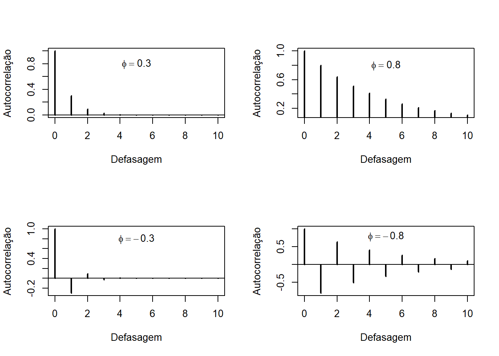
11 Modelos ARMA
11.1 O polinômio de defasagens
Definition 11.1 Considere uma sequência \(\{a_t\}\). O operador defasagem é definido como \(Ba_t = a_{t-1}\). Em inglês este operador é conhecido como backshift.
Example 11.1 Considere a série \(11,6,3,7,15,8\).
\[\begin{align*} Ba_2 &= a_{1}=11\\ B a_6& =a_5 =15 \end{align*}\] \(\blacksquare\)
Seguem algumas propriedades fundamentais do operador defasagem
- \(Bc=c\)
- \(B^k a_t=a_{t-k}\).
- \(B(c+ba_{t})=c+ba_{t-1}\) (operador linear)
- \((B^m - B^n)a_t = a_{t-m}-a_{t-n}.\)
- \(B^{-1}a_t = a_{t+1}\)
Note que o operador \(B^{-1}\) leva \(a_t\) para um passo a frente (como em uma previsão). É comum encontrar a definição \(F=B^{-1}\), onde a letra \(F\) é escolhida por causa do termo forecast (previsão).
Definition 11.2 Seja \(B\) o operado defasagem. Então, definimos um polinômio de defasagens como \[\psi(B)=a_0+a_1B+\cdots+a_n B^n.\]
Note que \(\psi(B)x_t\) é um modo sucinto para o polinômio \[a_0x_t+a_1x_{t-1}+\cdots+a_n x_{t-n}.\]
O polinômio de defasagens pode ser operado como um polinômio regular. Em particular, sejam \(a(B)\) e \(b(B)\) dois polinômios de defasagem, definidos por
\[\begin{aligned} a(B)&=1-aB\\b(B)&=1-bB\end{aligned}.\] Então, realizar a operação
\[\begin{aligned} a(B)b(B)x_t&=a(B)[(1-bB)x_t]=a(B)(x_t-bx_{t-1})\\ &=a(B)x_t-ba(B)x_{t-1}=(1-aB)x_t-b(1-aB)x_{t-1}\\ &=x_t-(a+b)x_{t-1}+abx_{t-2}\end{aligned}\] é equivalente a encontrar \[c(B)=(1-aB)(1-bB)=1-(a+b)B + abB^2\] e calcular \[c(B)x_t=x_t-(a+b)x_{t-1}+abx_{t-2}.\]
Dizemos que o polinômio de defasagens \(\psi(B)\) possui inversa se existe uma função \(\psi^{-1}(B)\) tal que \(\psi(B)\psi^{-1}(B)x_t=x_t\). Vamos estabelecer sob quais condições essa inversa existe e converge. Para tanto, considere o polinômio autoregressivo simples
\[\phi(B) = 1 - \phi B\] e a relação \(y_t = \phi(B)x_t = x_t - \phi x_{t-1}.\)$ Isolando \(x_t\) e realizando substituições retroativas sucessivas, obtemos: \[\begin{aligned} x_t &= y_t + \phi x_{t-1} \\ &= y_t + \phi y_{t-1} + \phi^2 x_{t-2} \ &;;\vdots \\ &= \sum_{j=0}^{n-1} \phi^j y_{t-j} + \phi^n x_{t-n} = \left(\sum_{j=0}^{n-1} \phi^j B^j\right) y_t + \phi^n x_{t-n}. \end{aligned}\] Ao tomarmos o limite com \(n \to \infty\), o operador candidato a inverso é a série geométrica de potências \[\phi^{-1}(B) = \sum_{j=0}^{\infty} \phi^j B^j = 1 + \phi B + \phi^2 B^2 + \dots\] Para que essa soma infinita convirja e o termo do passado remoto se anule (\(\lim_{n \to \infty} \phi^n x_{t-n} = 0\)), exige-se que a raiz \(B'\) da equação característica \(1 - \phi B = 0\) esteja estritamente fora do círculo unitário no plano complexo (\(|B'| > 1\)), o que equivale à condição \(|\phi| < 1\).
Para estender esse resultado para polinômios de qualquer ordem \(p\), considere o resultado a seguir.
Proposition 11.1 Seja \(T\) uma matriz quadrada de ordem \(m\) e considere a soma parcial \[S_n = \sum_{j=0}^n T^j B^j.\] A série \(S_n\) converge para \[(\mathbf{I}_m - TB)^{-1}\] quando \(n \to \infty\) se e somente se todos os autovalores de \(T\) forem estritamente menores que 1 em módulo (\(|\lambda_i(T)|< 1, \forall i\)). Nesse caso, \(T^j \to \mathbf{0}\) quando \(j \to \infty\)
A proposição acima é a chave para demonstrar o seguite teorema
Theorem 11.1 Seja \[y_t=x_t-\sum_{j=1}^p\phi_jx_{t-j}=\left(1-\sum_{j=1}^p\phi_jB^j\right)x_t=\phi(B)x_t,\] onde \(\phi(B)\) é o respectivo polinômio de defasagens. Então, existe \(\phi^{-1}(B)\) se e somente se o módulo das raízes de \(\phi(B)\) são maiores que um.
Proof. Faremos a demonstração para o caso \(p=2\), mas os mesmos passos podem ser seguidos para demonstrar o caso geral.
Seja
\[\begin{aligned}y_t&=x_t-\phi_1x_{t-1}-\phi_2 x_{t-2}\\&=(1-\phi_1B-\phi_2 B^2)x_t\end{aligned}.\] Comecemos notando que podemos reescrever \(x_t\) em função de \(y_t\) como segue
\[\left(\begin{array}{c} x_t \\ x_{t-1}\end{array}\right)=\left(\begin{array}{c} y_t \\ 0\end{array}\right)+\left(\begin{array}{cc} \phi_1 & \phi_2 \\ 1 & 0\end{array}\right)\left(\begin{array}{c} x_{t-1} \\ x_{t-2}\end{array}\right)\] Fazendo \(z_t'=(x_t,x_{t-1})\), teremos \[z_t=\left(\begin{array}{c} y_t \\ 0\end{array}\right)+\underbrace{\left(\begin{array}{cc} \phi_1 & \phi_2 \\ 1 & 0\end{array}\right)}_{A}z_{t-1}.\] Utilizando essa relação recursiva, teremos \[\begin{aligned}z_t&=A^n z_{t-n}+\sum_{j=0}^{n-1}A^j\left(\begin{array}{c} y_{t-j} \\ 0\end{array}\right)\\&=A^n z_{t-n}+\sum_{j=0}^{n-1}A^jB^j\left(\begin{array}{c} y_{t} \\ 0\end{array}\right)\end{aligned}\] e, aplicando o limite de \(n\to\infty\) dos dois lados, \[z_t=\lim_{n\to\infty}A^n z_{t-n}+\lim_{n\to\infty}\sum_{j=0}^{n-1}A^jB^j\left(\begin{array}{c} y_{t} \\ 0\end{array}\right).\] Seja \[\psi(B)=\sum_{j=0}^\infty (AB)^j.\] Pela Proposição 11.1, \(\psi(B)\) é convergente se e somente se os autovalores de \(A\) são, em módulo, menores que 1. Nessas condições, temos que \[\lim_{n\to\infty}A^n z_{t-n}=0\] e que \(\psi(B)\) é convergente, sendo seu limite dado por \[\psi(B)=(\mathbf{I}_2-AB)^{-1}.\] onde \[\begin{aligned}(\mathbf{I}_2-AB)^{-1}&=\left(\begin{array}{cc}1-\phi_1B & -\phi_2 B \\ -B & 1\end{array}\right)^{-1}\\&=\frac{1}{\det(\mathbf{I}_2-AB)}\left(\begin{array}{cc}1 & \phi_2 B \\ B & 1-\phi_1B\end{array}\right)\end{aligned}\] logo, \[x_t=(1\;\;0)z_t=\det(\mathbf{I}_2-AB)^{-1}y_t\] ou seja,
\[\begin{aligned}\phi^{-1}(B)&=\det(\mathbf{I}_2-AB)^{-1}\\&=[1-\phi_1B-\phi_2B^2]^{-1}\\&=[\phi(B)]^{-1}\end{aligned}\].
Agora, observe que os autovalores de \(A\) são obtidos através da solução de \[\begin{align}0=&\left|\left(\begin{array}{cc}\phi_1 & \phi_2 \\ 1 & 0\end{array}\right)-\lambda \textbf{I}_2\right|\\ &=1-\frac{1}{\lambda}\phi_1-\phi_2\frac{1}{\lambda^2}\end{align}.\] Fazendo \(\lambda = 1/B\), teremos que a equação acima se torna \[0=1-\frac{1}{\lambda}\phi_1-\phi_2\frac{1}{\lambda^2}\equiv 1-\phi_1 B-\phi_2B^2=\phi(B)\] logo, as raízes de \(\phi(B)\) são maiores que um em módulo, então o módulo dos autovalores de \(A\) são menores que um e, portanto, existe \(\phi^{-1}(B)\).
11.2 O modelo autorregressivo
O modelo autorregressivo de ordem \(p\), ou \(AR(p)\), é dado por \[\begin{equation} x_t = \sum_{i=1}^{p}\phi_ix_{t-i} +\varepsilon_t \end{equation}\] onde \(\varepsilon_t\) é um ruído branco. Nesse modelo, a contribuição da observação \(x_{t-j}\) em \(x_t\) é dada por \(\phi_j\), que é invariante no tempo.
Utilizando o polinômio de defasagens, pode-se escrever o modelo AR(\(p\)) como
\[\begin{equation} \phi(B)x_t = \varepsilon_t, \end{equation}\] onde \(\phi(B)=1-B\phi_1-\cdots \phi_p B^p\) é um polinômio de defasagens, também denominado de polinômio autorregressivo ou ainda de característico.
Se o módulo das raízes de \(\phi(B)\) são maiores que um, então existe \(\phi^{-1}(B)\), ou seja, existem pesos \(\psi_1,\psi_2,\ldots\) tais que \[x_t=\phi^{-1}(B)\varepsilon_t=\left(\sum_{j=0}^\infty \psi_jB^j\right)\varepsilon_t,\] e o processo será estacionário, com média e variância iguais a
\[\begin{align} E(x_t)&=\left(\sum_{j=0}^\infty \psi_jB^j\right)E(\varepsilon_t)=0\\ Var(y_t)&=Var\left(\sum_{j=0}^\infty \psi_jB^j\varepsilon_t\right)=\nu\sum_{j=1}^\infty \psi_j^2\\ \end{align}\] e a função de auto covariância é dada por \[\begin{align} \gamma(h)&=\text{Cov}(x_t,x_{t-h})\\&=\text{Cov}\left( \left(\sum_{j=0}^\infty \psi_jB^j\right)\varepsilon_t,\left(\sum_{k=0}^\infty \psi_kB^k\right)\varepsilon_{t-h}\right)\\ &=\sum_{j=0}^\infty \sum_{k=0}^\infty \psi_j\psi_k \text{Cov}\left( \varepsilon_{t-j},\varepsilon_{t-k-h}\right)\\ &=\nu\sum_{j=0}^\infty \psi_j\psi_{j+h}\end{align} \tag{11.1}\]
Example 11.2 Considere o processo \(AR(1)\) abaixo
\[\begin{align*} x_t(1-B\phi)&= \varepsilon_{t-1}. \end{align*}\]
Seja \(\dot{B}\) a raiz do polinômio \(1-B\phi\). Temos que \[\begin{align*} \phi(\dot{B})=0\Rightarrow 1-\phi \dot{B} =0 \Rightarrow \dot{B} =\frac{1}{\phi} \end{align*}\]
Logo, o processo AR(1) é estacionário se \[|\dot{B}|>1\Rightarrow \left|\frac{1}{\phi}\right|>1\Rightarrow |\phi|< 1\]
Sabemos que
\[\phi^{-1}(B)=\frac{1}{1-\phi B}=\sum_{j=1}^\infty\phi^j B^j=\sum_{j=1}^\infty\psi_j B^j\] onde \(\psi_j=\phi^j\). Deste modo,
\[\gamma(h)=\nu\sum_{j=0}^\infty \phi^j\phi^{j+h}=\frac{\nu\phi^h}{1-\phi^2} \] Assim, a função de autocorrelação é dada por \[\rho(h)=\frac{\gamma(h)}{\gamma(0)}=\phi^h.\]
Note que:
Se \(\phi\in(0,1)\), então \(\rho(h)\) decai exponencialmente para zero
Se \(\phi\in(-1,0)\), então \(\rho(h)\) decai exponencialmente para zero, mas alternando o sinal.
Abaixo, apresentamos alguns gráficos da função de aucorrelação do processo AR(1).
Example 11.3 Considere que \(x_t\) é um AR(\(2\)), ou seja, \[x_t=\phi_1 x_{t-1}+\phi_2 x_{t-2}+\varepsilon_t\Rightarrow x_t\phi(B)=\varepsilon_t,\] onde \(\phi(B)=1-\phi_1B-\phi_2 B^2\). As raízes desse polinômio são \[\dot{B}=\frac{1}{2\phi_2}\left[-\phi_1\pm\sqrt{\phi_1^2+4\phi_2}\right]\] e, considerando que \(|\dot{B}|>1\), o processo será estacionário se \((\phi_1,\phi_2)\) pertence ao triângulo delimitado pelos vértices (-2,-1), (0,1), (2,-1). É interessante notar que, se \(\phi_2<0\), é possível que as raízes de \(\phi(B)\) sejam um par de números complexos conjugados.
11.2.1 A função de autocorrelação para o \(AR(p)\)
Consideremos o processo \[x_t = \sum_{j=1}^p\phi_j x_{t-j}+\varepsilon_t,\] e suponha que ele é estacionário. Multiplicando ambos os lados por \(x_{t-h}\) e aplicando a esperança, teremos \[\begin{align} E(x_{t-h}x_t)&=\sum_{j=1}^p \phi_j E(x_{t-h}x_{ t-j}) \end{align}\] e, como \(\gamma(h)=E(x_t x_{t-h})\), teremos \[\begin{align} \gamma(h)&=\sum_{j=1}^p \phi_j \gamma(h-j) \end{align}. \tag{11.2}\]
Dividindo ambos os lados por \(\gamma(0)\), teremos \[\begin{align} \rho(h)&=\sum_{j=1}^p \phi_j \rho(h-j) \end{align}.\] Essa relação pode ser utilizada para encontrar a função de autocorrelação do processo sem a necessidade de encontrar a inversa de \(\phi(B)\).
Example 11.4 Abaixo, ilustramos o processo prático para obter a função de autocorrelação para um processo AR(\(p\)) qualquer.
Sem perda de generalidade, considere o processo \(AR(2)\) abaixo: \[x_{t}=\phi_1x_{t-1}+\phi_2x_{t-2}+\varepsilon_t.\] Multiplicando a equação acima por \(x_{t-1}\) em ambos os lados teremos \[x_{t}x_{t-1}=\phi_1x_{t-1}^2+\phi_2x_{t-2}x_{t-1}+\varepsilon_t x_{t-1}.\] Calculando o valor esperado, temos \[\begin{align*} \gamma(1)&=\phi_1E(x_{t-1}^2)+\phi_2E(x_{t-2}x_{t-1})+E(\varepsilon_t x_{t-1})\\ &=\phi_1\gamma(0) + \phi_2\gamma(1). \end{align*}\] onde \(E(\varepsilon_t x_{t-1})=0\) porque \(x_t\) é sempre não correlacionada com o futuro do ruído. Dividindo ambos os lados por \(\gamma(0)\) teremos \[\rho(1)=\phi_1+\phi_2\rho(1),\] logo, \[\rho(1)=\frac{\phi_1}{1-\phi_2}.\]
De modo análogo, teremos \[x_{t-2} x_{t}=x_{t-2}\left(\phi_1x_{t-1}+\phi_2x_{t-2}+\varepsilon_{t}\right).\] Aplicando a esperança, teremos \[\begin{align*} \gamma(2)&=\phi_1 \gamma(1)+\phi_2\gamma(0). \end{align*}\] e dividindo os dois lados por \(\gamma(0)\) teremos
\[\rho(2)=\phi_1\rho(1)+\phi_2=\frac{\phi_1^2}{1-\phi_2}+\phi_2.\] A partir de \(\rho(1)\) e \(\rho(2)\), os valores subsequentes \(\rho(3), \rho(4), \ldots\) podem ser calculados recursivamente: \[\rho(3) = \phi_1 \rho(2) + \phi_2 \rho(1),\] e assim sucessivamente para qualquer \(h \ge 3\).
Conforme visto no exemplo anterior, a fórmula de recursão apresentada é útil para calcular a função de autocorrelação na prática. Vamos apresentar uma forma alternativa que não utiliza recursão e traz informações importantes sobre o comportamento de \(\rho(h)\). Inicialmente, observe que
\[x_t=\sum_{j=1}^p\phi_jx_{t-j}\] pode ser obtida por \[\underbrace{\left(\begin{array}{c}x_t \\ x_{t-1} \\ \vdots \\ x_{t-p+1} \\x_{t-p}\end{array}\right)}_{z_t}=\underbrace{\left(\begin{array}{ccccc}\phi_1 & \phi_2 & \cdots &\phi_{p-1} & \phi_p \\ 1 & 0 & \cdots& 1 & 0 \\ 0 & 0 & \cdots & 0 & 0\\ \vdots & \vdots & \ddots & \vdots &0 \\ 0 & 0 & \cdots & 1 & 0 \end{array}\right)}_{A}\underbrace{\left(\begin{array}{c}x_{t-1} \\ x_{t-2} \\ \vdots \\ x_{t-p} \\x_{t-p-1}\end{array}\right)}_{z_{t-1}}\] ou seja, como \(z_t=Az_{t-1}\). Desta recursão, teremos que \[z_t=A^h z_{t-h}.\] Considere que a decomposição em valores de \(A\) na forma canônica é dada por \(A=P\Lambda P^{-1}\), onde \(\Lambda\) é a matriz diagonal com contendo os autovalores de \(A\). Então,
\[\begin{aligned}A^h&=AA^{h-1}=(P\Lambda P^{-1})A^{h-1}\\&=P\Lambda P^{-1}P\Lambda P^{-1}A^{h-2}\\ &=(P\Lambda^2P^{-1})A^{h-2}\\&=P\Lambda^h P^{-1}\end{aligned}\] deste modo, \[z_t=P\Lambda^hP^{-1} z_{t-h}.\] Ao multiplicar ambos os lados por \(x_{t-h}\) e aplicar a esperança e dividir por \(\gamma(0)\), observe que
\[\begin{aligned} \frac{E(x_{t-h}z_t')}{\gamma(0)}&=(\rho(h),\ldots,\rho(h-p))\\ \frac{E(x_{t-h}z_{t-h}')}{\gamma(0)}&=(1,\ldots,\rho(-p))\\ \end{aligned}\] Logo, existem \(c_1,\ldots, c_p\) tais que \[\rho(h)=\sum_{j=1}^p c_j\lambda_j^h,\] onde \(\lambda_1,\ldots,\lambda_p\) são os autovalores de \(A\), ou ainda, \(1/\lambda\) são as raízes do polinômio autorregressivo.
Como \(|\lambda_j|<1\), a função de autocorrelação tem um decaimento rápido, sendo influenciada diretamente pelos maiores autovalores e exibindo os seguintes comportamentos, segundo as raízes do polinômio de defasagens:
Raízes reais: decaem exponencialmente, alternando de sinal se elas forem negativas, conforme apresentado no modelo AR(1)
Raízes complexas: sendo \(\lambda\) uma raiz complexa, ela pode ser reescrita como \(\lambda =re^{i\theta}.\) Deste modo \[\lambda^h = r^he^{ih\theta}=r^h[\cos(h\theta)+i\sin(h\theta)]\] Como essas raízes aparecem em pares conjugados, sua combinação linear produz uma senóide amortecida, dada por \[dr^h \cos(\theta h+g).\] ::: {#exm-} Vamos mostrar esse resultado para o caso \(p=2\) (o caso geral é análogo). O polinômio característico deste modelo é
\[\phi(B)=1-\phi_1B-\phi_2B^2.\] e, denominando os recíprocos de suas raizes por \(\lambda_1\) e \(\lambda_2\), teremos \[\rho(h)=c_1\lambda_1^h+c_2\lambda_2^h.\]
Se \(\lambda_1\) é real então \(\lambda_2\) também é real e o decaimento de \(\rho(h)\) será exponencial, podendo alternar o sinal se algum dos autovalores for negativo.
Se \(\lambda_1\) é complexo, então \(\lambda_2\) é o seu conjugado. Em coordenadas polares, escrevemos \(\lambda\_1 = r e^{i\omega}\) e \(\lambda\_2 = r e^{-i\omega}\), onde \(r = \sqrt{-\phi_2}\) é o módulo e \[\omega = \arccos\left(\frac{\phi_1}{2\sqrt{-\phi_2}}\right)\] é a frequência angular. Como \(\rho(h)\) assume apenas valores reais, as constantes \(c_1\) e \(c_2\) também são complexas conjugadas. Aplicando a fórmula de Euler \(e^{\pm i h \omega} = \cos(h\\omega) \pm i \sin(h\omega)\), temos \[ \begin{aligned} \rho(h) &= c_1 (r e^{i\omega})^h + c_2 (r e^{-i\omega})^h \\ &= r^h \left[ c_1 e^{i h \omega} + c_2 e^{-i h \omega} \right] \\ &= r^h \left[ (c_1 + c_2) \cos(h\omega) + i(c_1 - c_2) \sin(h\\omega) \right]. \end{aligned} \] Definindo os coeficientes reais \(a = c\_1 + c\_2\) e \(b = i(c\_1 - c\_2)\), a expressão simplifica para
\[\rho(h) = r^h \left[ a \cos(h\omega) + b \sin(h\\omega) \right] = d \cdot r^h \cos(h\\omega - \theta).\] Portanto, quando as raízes são complexas, a função de autocorrelação exibe um comportamento de onda senoidal amortecida, onde a amplitude decai exponencialmente à taxa \(r^h = (-\phi_2)^{h/2}\).
A próxima figura mostra esse efeito.
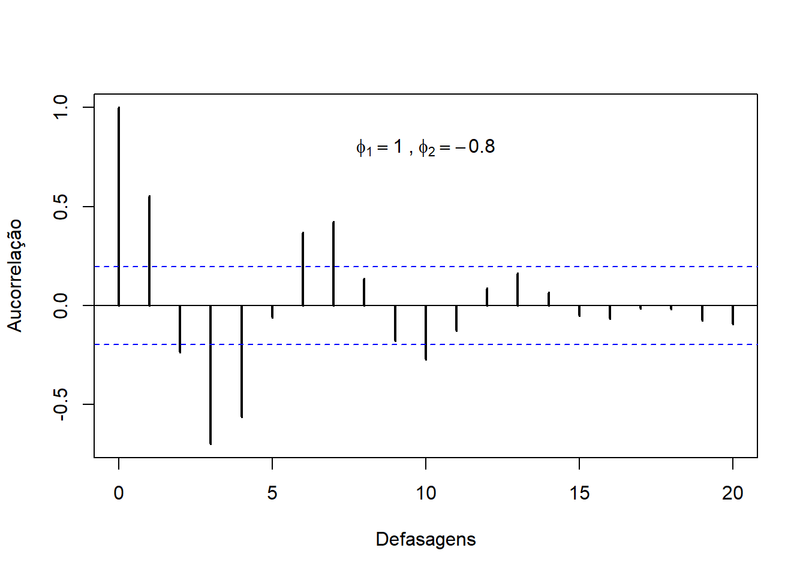
:::
11.2.2 A função de autocorrelação parcial (PACF)
Conforme já discutido, a função de autocorrelação mede a dependência linear entre \(x_t\) e \(x_{t+h}\). No entanto, para \(h \ge 2\), parte dessa correlação ocorre de forma indireta, devido à influência exercida pelo conjunto das \(h-1\) observações intermediárias \(\{x_{t+1}, x_{t+2}, \ldots, x_{t+h-1}\}\).
Para construir uma medida que isole a dependência direta entre \(x_t\) e \(x_{t+h}\), elimina-se o efeito linear desse bloco intermediário em ambas as extremidades:
- Para \(x_{t+h}\), considera-se a previsão linear \(f_{t+h}\) baseada nos valores intermediários \(x_{t+h-1}, \ldots, x_{t+1}\):
\[\hat{x}_{t+h} = \sum_{j=1}^{h-1} \alpha_j x_{t+h-j}.\]
O erro de previsão \(e_{t+h} = x_{t+h} - \hat{x}_{t+h}\) representa a informação de \(x_{t+h}\) não explicada pelo bloco intermediário.
- Para \(x_t\), considera-se o valor suavizado de \(x_t\) baseada no mesmo bloco intermediário \(x_{t+1}, \ldots, x_{t+h-1}\):
\[\hat{x}_t = \sum_{j=1}^{h-1} \alpha_j x_{t+j}.\] O erro \(e_t = x_t - \hat{x}_t\) representa a informação de \(x_t\) não explicada pelo bloco intermediário.
Os coeficientes \(\alpha_1, \ldots, \alpha_{h-1}\) são obtidos via minimização do erro quadrático médio de previsão (os resultados são os mesmos se você decidir usar \(e_{t+h}\) ou \(e_t\)).
Deste modo, a correlação entre os dois erros de previsão \[\text{Corr}(x_{t+h}-\hat{x}_{t+h}, x_t-\hat{x}_t)\] elimina completamente o efeito das \(h-1\) variáveis intermediárias, medindo apenas a associação direta entre \(x_t\) e \(x_{t+h}\). Essa é a base intuitiva para a função de autocorrelação parcial.
Definition 11.3 Seja \(\{x_t\}\) um processo estacionário com média zero. A função de autocorrelação parcial na defasagem \(h\), denotada por \(\phi_{hh}\), é definida por: 1. Para \(h = 1\): \[\phi_{11} = \text{Corr}(x_{t+1}, x_t) = \rho(1).\]
- Para \(h \ge 2\): \[\phi_{hh} = \text{Corr}\left( x_{t+h}-\hat{x}_{t+h}, \; x_t - \hat{x}_t \right),\] onde:
\(\hat{x}_{t+h} = \sum_{j=1}^{h-1} \alpha_j x_{t+h-j}\) é a melhor previsão linear de \(x_{t+h}\) baseada nos valores intermediários \(\{x_{t+1}, \dots, x\_{t+h-1}\}\).
\(\hat{x}\_t = \sum\_{j=1}^{h-1} \alpha_j x_{t+j}\) é a melhor previsão linear retroativa de \(x_t\) baseada no mesmo conjunto intermediário \(\{x_{t+1}, \dots, x_{t+h-1}\}\).
Em particular, se \(\{x_t\}\) for um processo gaussiano, a autocorrelação parcial equivale à correlação condicional
\[\phi_{hh} =\text{Cor}\left(x_{t+h}, x_t \;\big|\; x_{t+1}, \ldots, x_{t+h-1}\right).\]
Example 11.5 Considere o processo AR(1) estacionário. Como \(\gamma(h)=\phi^h\), é imediato, pela definição, que \(\phi_{11}=\gamma(1)/\gamma(0)=\phi\).
Para \(h \ge 2\), o bloco de variáveis intermediárias é \(\{x_{t+1}, \ldots, x_{t+h-1}\}\). Pela estrutura do processo \(AR(1)\), as melhores previsões baseadas nesse bloco dependem apenas das observações imediatamente vizinhas, sendo dadas por \(\hat{x}_{t+h} = \phi x_{t+h-1}\) e \(\hat{x}_t = \phi x_{t+1}\). Então, \[\begin{aligned}\phi_{hh}&=Cov( x_{t+h}-\hat{x}_{t+h},x_t-\hat{x}_t)\\&=Cov( x_{t+h}-\phi x_{t+h-1},x_t-\phi x_{t+1})\\&= \gamma(h)-\phi\gamma(h-1)-\phi\gamma(h-1)+\phi^2\gamma(h-2)\\ \end{aligned}\]
e, como \[\begin{aligned}\gamma(h)&=\phi \gamma(h-1)\\ \gamma(h-1)&=\phi\gamma(h-2) \end{aligned}\] temos que, \(\phi_{hh}=0\) para todo \(h\geq 2\)
Para o AR(1), apenas a autocorrelação parcial de defasagem 1 é não nula. De fato, para qualquer AR(\(p\)) estacionário, temos que apenas as \(p\) primeiras defasagens da função de autocorrelação parcial serão não nulas.
Para mostrar esse fato, seja \(x_t\) um processo AR(\(p\)) estacionário. Faça, \[\begin{aligned} \hat{x}_{t+h}&=\sum_{j=1}^p \phi_j x_{t+h-j}\\ \hat{x}_t&=\sum_{j=1}^p \phi_j x_{t+j}\end{aligned}\]
Então,
\[\begin{aligned}\phi_{hh}&=Cov(x_{t+h}-\hat{x}_{t+h},x_t-\hat{x}_{t})\\ &=Cov\left(x_{t+h}-\sum_{j=1}^p\phi_j x_{t+h-j},x_{t}-\sum_{j=1}^p\phi_j x_{t+j} \right)\\ &=Cov\left(\varepsilon_{t+h},x_{t}-\sum_{j=1}^p\phi_j x_{t+j} \right)\\ &=\sum_{j=1}^p \phi_j Cov\left(\varepsilon_{t+h}, x_{t+j} \right)\\ \end{aligned}\] pois \(\text{Cov}(\varepsilon_{t+h}, x_t)=0\). Logo, \(\phi_{hh}\) é nulo sempre que \(h>p\).
Definition 11.4 Autocorrelação parcial amostral
Para a série temporal observada \(x_1,\ldots,x_n\), a autocorrelação parcial amostral\(\hat{\phi}_{hh}\) é a correlação amostral entre \(x_1-\hat{x}_1,\ldots,x_{n-h}-\hat{x}_{n-h}\) e \(x_{1+h}-\hat{x}_{1+h},\ldots,x_{n}-\hat{x}_{n}\). Por sua vez \(\hat{\alpha}_1,\ldots,\hat{\alpha}_{h-1}\) são os valores que minimizam
\[\sum_{t=h}^n\left(x_t - \sum_{j=1}^{h-1} \alpha_j x_{t-j}\right)^2.\] O correlograma parcial é construído com o gráfico de \((h,\hat{\phi}_{hh})\).
No exemplo abaixo, uma amostra de tamanho 100 foi gerada de um processo AR(2) estacionário e o gráfico da função de autocorrelação parcial gerado. Note que há apenas duas autocorrelações significativas, levantando evidências de que a ordem do modelo autoregressivo é 2.
set.seed(1)
x = c(0,0)
for(i in 3:100) x[i] = x[i-1] -.8*x[i-2]+rnorm(1,0,.1)
pacf(x, xlab = 'Defasagem', ylab = 'Autocorrelação parcial', main = '', lwd = 2)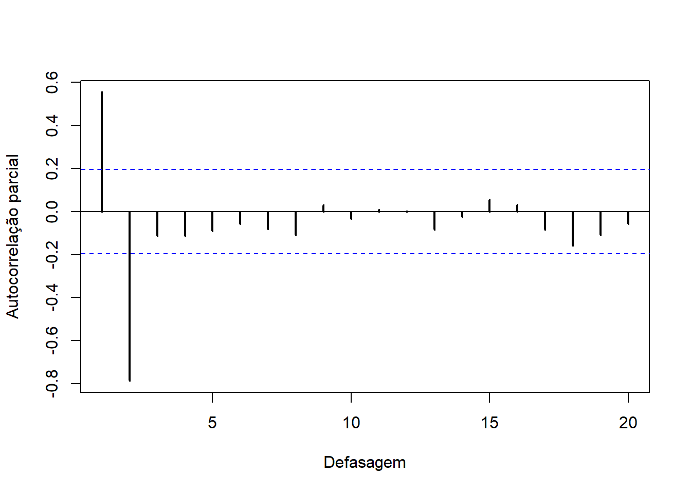
11.2.3 Método de estimação de Yule-Walker
O método de estimação de Yule-Walker para os parâmetros do modelo AR(\(p\)) consiste na aplicação do método dos momentos. Sua principal vantagem é a ausência de suposição sobre a distribuição dos erros do modelo, exigindo apenas a condição de estacionaridade.
Para o processo \(AR(p)\) estacionário, sabemos que \[\gamma(h) = \sum_{j=1}^p \phi_j \gamma( h-j).\] Considere as equações do modelo AR(\(p\)): \[x_t = \sum_{j=1}^p \phi_j x_{t-j}+\varepsilon_t.\] Podemos multiplicar ambos os lados por \(x_t\). Após aplicar a esperança teremos \[E(x_t^2) = \sum_{j=1}^p \phi_j E(x_{t-j}x_{t})+E(\varepsilon_tx_{t}).\] Aqui há um detalhe importante:
\[E(\varepsilon_tx_{t})=E\left(\varepsilon_t\left[\sum_{j=1}^p \phi_j x_{t-j}+\varepsilon_t\right]\right)=E(\varepsilon_t^2)=\nu\] Portanto, \[\begin{align}
\gamma(h)=\left\{\begin{array}{ll}
\sum_{j=1}^p \phi_j \gamma( h-j),&\;\;\hbox{se }h>0\\
\sum_{j=1}^p \phi_j \gamma( j)+\nu,&\;\;\hbox{se }h=0 \\
\end{array}\right.
\end{align}\]
O método de estimação de Yule-Walker consiste em substituir \(\gamma(1),\ldots,\gamma(p)\) pelas autocovariâncias amostrais:
\[\begin{array}{c}\hat{\gamma}(1)=\\ \hat{\gamma}(2)= \\ \vdots \\ \hat{\gamma}(p)=\end{array}\begin{array}{llll}\phi_1\hat{\gamma}(0)&+\phi_2\hat{\gamma}(-1) &+\cdots &+\phi_p\hat{\gamma}(1-p) \\ \phi_1\hat{\gamma}(1)&+\phi_2\hat{\gamma}(0) &+\cdots &+\phi_p\hat{\gamma}(2-p)\\ \cdots & +\cdots &+\ddots&+\cdots\\ \phi_1\hat{\gamma}(p-1)&+\phi_2\hat{\gamma}(p-2) &+\cdots &+\phi_p\hat{\gamma}(0) \end{array}\]
Recordando que \(\gamma(-i)=\gamma(i)\), podemos escrever o sistema acima na forma matricial
\[\begin{align*} \underbrace{\left( \begin{array}{cccc} \hat{\gamma}(0) & \hat{\gamma}(1) & \cdots & \hat{\gamma}(p-1) \\ \hat{\gamma}(1) & \hat{\gamma}(0) & \cdots & \hat{\gamma}(p-2) \\ \vdots & \vdots & \ddots & \vdots\\ \hat{\gamma}(p-1) & \hat{\gamma}(p-2) & \cdots & \hat{\gamma}(0) \end{array}\right)}_{\hat{\boldsymbol{\Gamma}}} \underbrace{\left( \begin{array}{c} \hat{\phi}_1 \\ \hat{\phi}_2 \\ \vdots \\ \hat{\phi}_p \end{array}\right)}_{\hat{\boldsymbol{\phi}}}= \underbrace{\left( \begin{array}{c} \hat{\gamma}(1) \\ \hat{\gamma}(2) \\ \vdots \\ \hat{\gamma}(p) \end{array}\right)}_{\hat{\boldsymbol{\gamma}}}. \end{align*}\] e os estimadores de Yule-Walker para os parâmetros autoregressivos são dados por \[\hat{\boldsymbol{\phi}}=\hat{\boldsymbol{\Gamma}}^{-1}\hat{\boldsymbol{\gamma}},\] onde \(\hat{\Gamma}^{-1}\) é computada de modo eficiente pelo Algoritmo de Durbin-Levinson.
Para estimar \(\nu\), observe que \[\gamma(0)=\sum_{j=1}^{p}\phi_j \gamma(j)+\nu\] Portanto, um estimador para \(\nu\) é dado por \[\hat{\nu}= \hat{\gamma}(0)-\sum_{j=1}^{p}\hat{\phi}_j\hat{\gamma}(j)\]
11.2.4 Estimador de máxima verossimilhança
Observe que o modelo autorregressivo é descrito, de modo condicional, através dos \(p\) últimos valores observados. Isto implica que \[x_t|\mathcal{D}_{t-1}\sim x_t|x_{t-1},\ldots,x_{t-p}\] ou seja, \(\{x_t\}\) é uma cadeia de Markov de ordem \(p\). Deste modo, para \(n>p\), \[\begin{align*} f(x_{1},\ldots,x_n)&=f\left(x_n|\mathcal{D}_{n-1}\right)f\left(\mathcal{D}_{n-1}\right)=f\left(x_n|x_{n-1},\ldots,x_{n-p}\right)f\left(\mathcal{D}_{n-1}\right)\\ &=\prod_{t=p+1}^{n}f\left(x_t|x_{t-1},\ldots,x_{t-p}\right) f(x_{1},\ldots,x_p). \end{align*}\] Agora, suponha que \(\varepsilon_t\sim\hbox{Normal}(0,\nu)\). Para \(\beta=(\phi_1,\ldots,\phi_p)\), a função de verossimilhança do processo é dada por
\[\begin{align*} L(\beta,\nu)&=\left(\frac{1}{2\pi\nu}\right)^{\frac{n-p}{2}}\exp\left\{-\frac{1}{2\nu}\sum_{t=p+1}^n(x_t-\sum_{j=1}^p \phi_jx_{t-j})^2\right\}\\&\times f(x_{1},\ldots,x_p|\beta,\nu). \end{align*}\]
Note que, em termos de informação de Fisher, o termo \(f(x_1,\ldots,x_n|\beta,\nu)\) tem peso reduzido com o aumento de \(n\). O método da maxima verossimilhança condicional consiste em ignorar esse termo, de modo que a função de verossimilhança possa ser escrita como um modelo linear, uma vez que
\[x_t=\sum_{j=1}^p \phi_jx_{t-j}+\varepsilon_t=\underbrace{(x_{t-1}\;\;\cdots \;\;x_{t-p})}_{f_t'}\underbrace{\left(\begin{array}{c}\phi_1 \\ \vdots \\ \phi_p\end{array}\right)}_{\beta}+\varepsilon_t.\] e \(\hat{\beta}\) e \(\hat{\nu}\) podem ser obtidos pelos estimadores já discutidos na seção sobre modelos lineares.
Já para o método da máxima verossimilhança, precisamos especificar a distribuição do termo adicional \(f(x_1,\ldots,x_p|\beta,\nu)\). Desde que o processo seja estacionário, sabemos que \(x_1,\ldots,x_p\sim\hbox{Normal}(\textbf{0}_p,\Sigma)\), o elemento \((i,j)\) de \(\Sigma\) é dado por
\[\sigma_{ij}=\gamma(|i-j|)=\nu\sum_{k=0}^\infty \psi_k\psi_{k+|i-j|}\] sendo \(\psi_0,\psi_1,\ldots,\) os coeficientes de \(\phi(B)^{-1}\). Para esse caso, a função de verossimilhança não possui expressão analítica para suas estimativas e as mesmas devem ser obtidas via maximização numérica.
11.2.5 Previsão
Conforme discutido ao longo das seções anteriores, o modelo AR(\(p\)) pode ser representado da forma aumentada
\[\underbrace{\left(\begin{array}{c}x_t \\ x_{t-1}\\ x_{t-2}\\\vdots\\ x_{t-p+1}\end{array}\right)}_{\theta_t}=\underbrace{\left(\begin{array}{ccccc}\phi_1 &\phi_2 & \cdots & \phi_{p-1} & \phi_{p} \\ 1& 0 &\cdots &0&0 \\ 0 & 1 & \cdots & 0 & 0 \\ \vdots & \vdots & \ddots & \vdots&\vdots \\0 & 0 & \cdots & 1 & 0\end{array}\right)}_{G}\underbrace{\left(\begin{array}{c}x_{t-1} \\ x_{t-2}\\ x_{t-3} \\ \vdots \\ x_{t-p}\end{array}\right)}_{\theta_{t-1}}+\underbrace{\left(\begin{array}{c}\varepsilon_t \\ 0\\0\\\vdots\\ 0\end{array}\right)}_{w_t}\] e, fazendo \(F'=(1,\mathbf{0}_{p-1})\), o modelo autorregresivo de ordem \(p\) é recuperado fazendo \(F'\theta_t\). Deste modo, o modelo AR(\(p\)) pode ser reescrito como um modelo de espaço de estados linear, dado por
\[\begin{aligned}y_t&=F'\theta_t+v_t,\quad\text{(eq. das observações)} \\ \theta_t&=G\theta_{t-1}+w_t,\quad\text{(eq. de estado)}\end{aligned}\] de onde fica evidente que \(y_t=x_t\) e que \(v_t\equiv0\) para todo \(t\). Deste modo, dados \(\mathcal{D}_t\), a distribuição da previsão de horizonte \(h\geq1\) é dada por \(x_{t+h}\sim\hbox{Normal}(f_t(h),Q_t(h))\), onde
\[f_t(h)=F'G^h\theta_t\] e
\[Q_t(h)=F'\sum_{k=1}^hG^{k-1}W(G^{k-1})'F\] onde \(W\) é uma matriz de ordem \(p\) o elemento (1,1) igual a \(\nu\) e os demais nulos.
Como \(G\) depende de \(\phi_1,\ldots,\phi_p\), tanto a previsão \(f_t(h)\) como a variância são calculadas substituindo esses parâmetros por suas respectivas estimativas.
Example 11.6 Considere a amostra \(\mathcal{D}_t\) do modelo AR(1). Então, \(F'=1\), \(G=\phi\), \(W=\nu\) e \(\theta_t=x_t\). Então
\[f_t(h)=\phi^h x_t\] e \[Q_t(h)=\nu\sum_{k=1}^{h}\phi^{2(k-1)}=\nu\frac{1-\phi^{2h}}{1-\phi^{2}}.\]
11.2.6 Processo autorregressivo com média não nula
Até o momento, assumimos que o processo AR\((p)\) é estacionário com \(E(x_t)=0\). Quando \(\mu=E(x_t)\neq 0\), temos um processo com média não nula, escrito como
\[x_t-\mu=\sum_{j=1}^p \phi_j(x_{t-j}-\mu)+\varepsilon_t\]
Observe que a deriva não altera a estrutura de autocorrelação do processo, uma vez que podemos definir \(z_t=x_t-\mu\), onde \(z_t\) é um AR(\(p\)) com \(E(z_t)=0\), o que implica em \[Cov(x_t, x_{t-h})=Cov(x_t-\mu,x_{t-h}-\mu)=Cov(z_t,z_{t-h}).\]
Dados \(\mathcal{D}_t\), a função de previsão para \(x_{t+h}\) com \(h\geq 1\) é dada por
\[E(x_{t+h}|\mathcal{D}_t)=E(z_{t+h}|\mathcal{D}_t)+\mu=f_t(h)+\mu,\] onde \(f_t(h)\) é a função de previsão para o modelo AR(\(p\)). Como todo processo estacionário é suposto ser ergódico, \(\mu\) pode ser estimado pela média amostral da série. Também é possível escrever
\[\begin{aligned}x_t-\mu&=\sum_{j=1}^p \phi_jx_{t-j}-\sum_{j=1}^p \phi_j\mu+\varepsilon_t\\x_t&=\mu\left(1-\sum_{j=1}^p \phi_j\right)+\sum_{j=1}^p\phi_jx_{t-j}+\varepsilon_t\end{aligned}\] onde \(c=\mu(1-\sum_{j=1}^p\phi_j)\) é denominado termo constante ou intercepto. Deste modo, \(x_t\) é reescrito como
\[x_t=(1,x_{t-1},\ldots,x_{t-p})\left(\begin{array}{c}c\\\phi_1\\\vdots \\\phi_p\end{array}\right)+\varepsilon_t\] e, reconhecendo a familiar forma linear, \(c\) pode ser estimado via método da máxima verossimilhança.
Example 11.7 A série abaixo apresenta o número anual de terremotos de magnitude maior ou igual à 7 na escala Richter.
require(gsheet)Carregando pacotes exigidos: gsheeturl <- 'https://docs.google.com/spreadsheets/d/1PPf1nOjwh1fnr1VtFW2DKN6PY9s9TXEQTn6ZX3igCBQ/edit?usp=sharing'
dados <- gsheet2tbl(url)
terr <- unlist(dados[,2])
terr <- ts( terr, start = 1900)
ts.plot(terr, ylab = 'No terremotos', xlab = 'Ano', lwd= 2)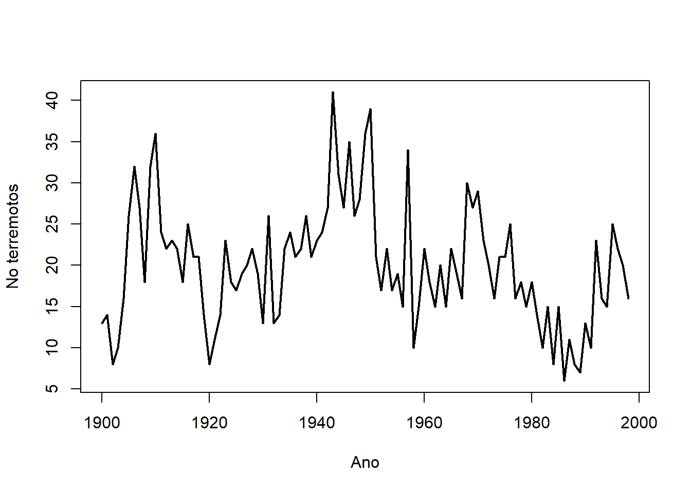
Note que o processo parece ser estacionário. Vamos explorar as funções de autocorrelação nas duas figuras abaixo. O correlograma parcial apresenta um único valor significativo, dando evidências para um modelo AR(1). Enquanto isso, o correlograma mostra um comportamento tendendo rapidamente para zero após 5 defasagens.
pacf(terr, lwd = 2, main ='Correlograma parcial')
stats::acf(terr, lwd =2 , main='Correlograma')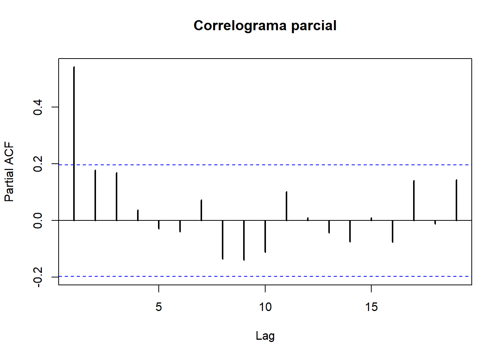
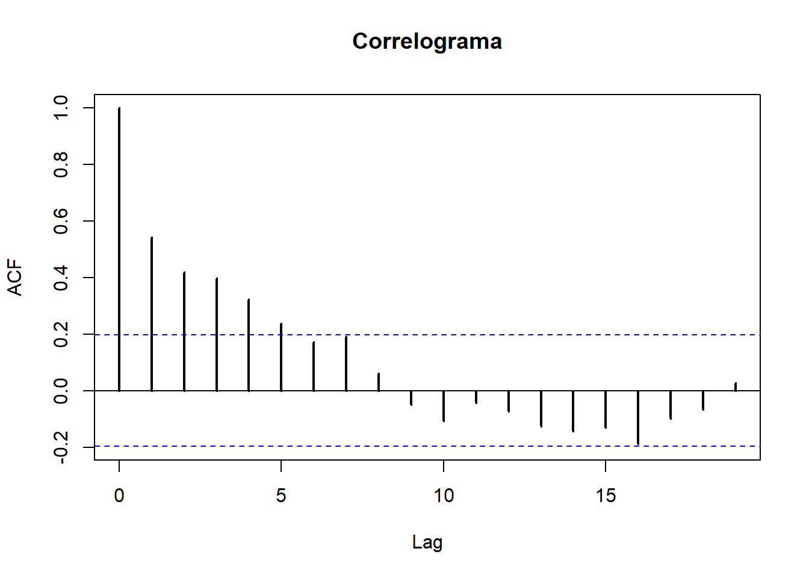
A função arima(x, order = c(p,0,0)) estima os parâmetros do modelo \(AR(p)\) já considerando a média diferente de zero (caso contrário, utilize o argumento include.mean=FALSE). Abaixo apresentamos o modelo ajustado.
mod <- arima( terr, c(1,0,0))
mod
Call:
arima(x = terr, order = c(1, 0, 0))
Coefficients:
ar1 intercept
0.5433 19.8907
s.e. 0.0840 1.3180
sigma^2 estimated as 36.7: log likelihood = -318.98, aic = 643.97Acima, temos os valores estimados para \(\phi\) (ar1) e \(\mu\) (intercept) - é importante ressaltar que, para a função arima, o termo intercepto é utilizado para designar a média.
Podemos verificar se o ajuste é adequado analisando os resíduos. Ambos correlogramas não apresentam valores significativos. O teste de Box-Pierce não rejeita a hipótese de ruído branco e o teste de Shapiro-Wilk não rejeita a hipótese de ruído gaussiano. Portanto, temos evidências de que o modelo AR(1) com erros gaussianos é adequado para essa série.
acf(mod$residuals, main= 'Correlograma')
pacf(mod$residuals, main = 'Correlograma parcial')
Box.test(mod$residuals)
shapiro.test(mod$residuals)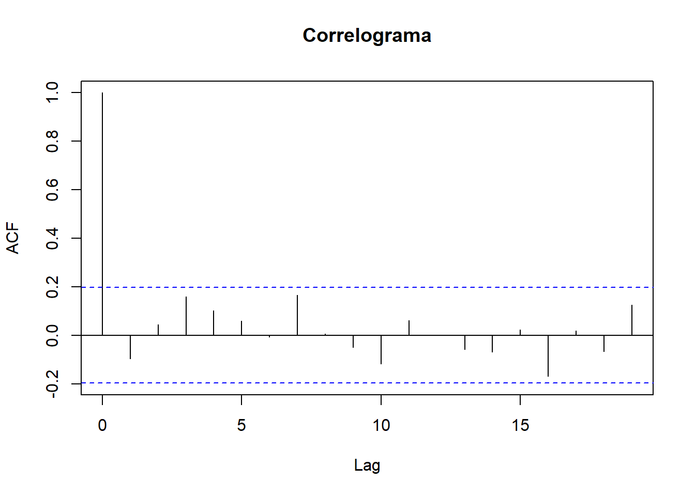
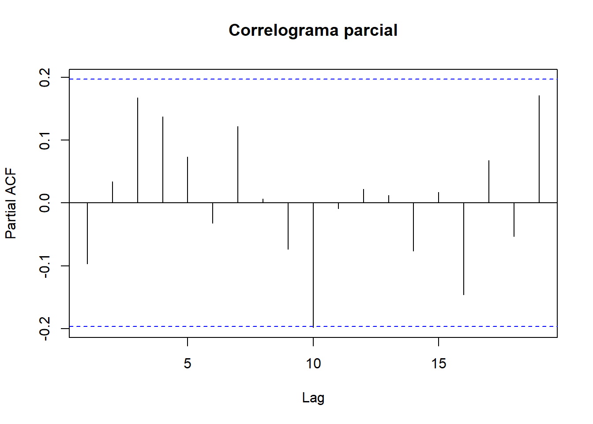
Box-Pierce test
data: mod$residuals
X-squared = 0.92715, df = 1, p-value = 0.3356
Shapiro-Wilk normality test
data: mod$residuals
W = 0.97813, p-value = 0.09826As estimativas encontradas foram \(\hat{\phi}=0,5\), \(\hat{\nu}=36,7\) e \(\hat{\mu}=19\). Podemos utilizar a função forecast do pacote de mesmo nome para fazer previsões. Note que à medida que o horizonte de previsão cresce, o modelo converge para a deriva (média estacionária da série).
require(forecast)Carregando pacotes exigidos: forecastRegistered S3 method overwritten by 'quantmod':
method from
as.zoo.data.frame zoo prev <- forecast(mod, 10)
plot(prev)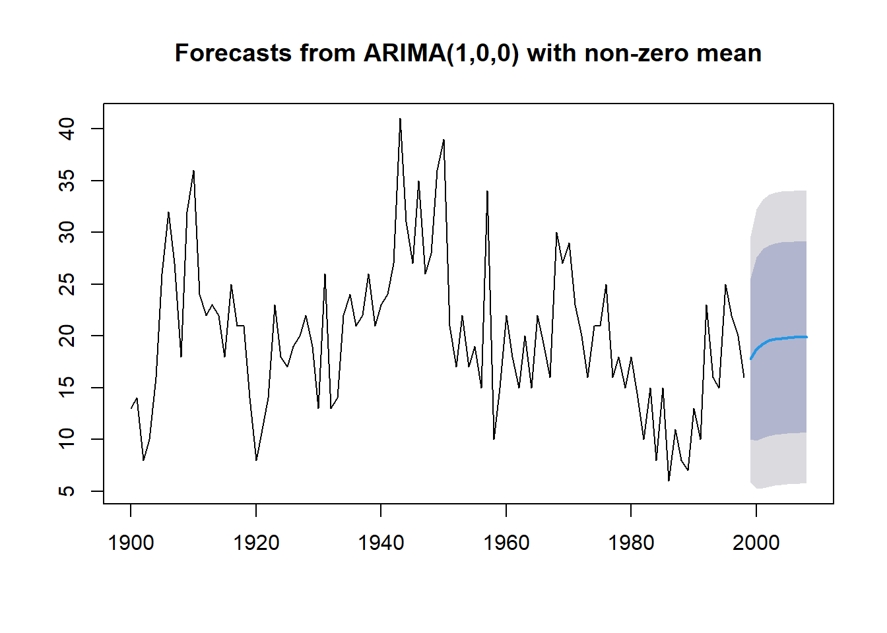
11.3 Exercícios
Exercise 11.1 A série temporal LakeHuron R) contém as medições anuais da altura média do nível do mar (em pés) do Lago Huron entre os anos de 1875 e 1972.
Verifique os correlogramas e apresente um modelo adequado para esta série.
Utilize a função
polyrootpara verificar se o modelo encontrado é estacionárioAnalise os erros de previsão (resíduos) e aplique o teste de Ljung-Box para avaliar se os resíduos se comportam como ruído branco.
Faça uma previsão de horizonte 5 anos.
Exercise 11.2 A série treering (disponível no pacote astsa) contém medições anuais da largura/espessura dos anéis de crescimento de árvores (medidas em milímetros) na região de Campito Mountain, cobrindo um período de mais de 1.000 anos. O crescimento de uma árvore em determinado ano depende das condições climáticas atuais e da reserva energética/crescimento acumulado nos anos imediatamente anteriores, o que gera uma estrutura autorregressiva.
Crie uma nova série, com a janela entre 1780 e 1899.
Verifique os correlogramas e apresente um modelo adequado para esta nova série.
Utilize a função
polyrootpara verificar se o modelo encontrado é estacionárioAnalise os erros de previsão (resíduos) e aplique o teste de Ljung-Box para avaliar se os resíduos se comportam como ruído branco.
Faça uma previsão de horizonte 5 anos.
11.4 O modelo de médias móveis
O processo \[ x_t= \varepsilon_t +\sum_{j=1}^{q}\theta_j\varepsilon_{t-j},\] onde \(\{\varepsilon_t\}\) é um ruído branco, é denominado média móvel de ordem \(q\) - note que esse modelo não está relacionado com o método de suavização de mesmo nome. Também podemos definir o modelo utilizando um polinômio de defasagens: \[\begin{align}x_t =\left(1+\sum_{j=1}^{q}\theta_jB^j\right)\varepsilon_t=\theta(B)\varepsilon_t\end{align}\]
Diferente do processo AR(\(p\)), o processo MA\((q)\) é sempre estacionário. De fato \[E(x_t)=E\left(\varepsilon_t +\sum_{j=1}^{q}\theta_j\varepsilon_{t-j}\right)=0,\] \[Var(x_t)=\nu\left(1+\sum_{j=1}^{q}\theta_j^2\right),\] logo o processo tem média e variância constantes. Para mostrar que ele é estacionário basta provar que \(\text{Cov}(x_t, x_{t-h})\) depende apenas de \(h\). Para tanto, defina \(\psi_0=1\), \(\psi_j=\theta_j\), para \(j=1,\ldots,q\) e \(\psi_j=0\) para \(j>q\). Então, \[\begin{aligned} \text{Cov}(x_t,x_{t+h})&=\sum_{j=0}^q\sum_{k=0}^q \psi_j\psi_k \text{Cov}\left(\varepsilon_{t-j},\varepsilon_{t+h-k}\right)\\ &=\sum_{j=0}^q\psi_j\psi_{j+h}\text{Cov}(\varepsilon_{t-j},\varepsilon_{t-j})\\&=\nu\sum_{j=0}^{q-h} \psi_{j+h}\psi_j\\ &=\nu\left[\theta_h+\sum_{j=1}^{q-h}\theta_j\theta_{j+h}\right]\end{aligned}\]
A função de autocorrelação desse processo é dada por
\[\rho(h)=\left\{\begin{array}{ll}\frac{\theta_h+\sum_{j=1}^{q-h}\theta_j\theta_{j+h}}{1+\sum_{j=1}^q\theta^2_j },&\;\;0<h\leq q\\0,&\hbox{ caso contrário}\end{array}\right.\]
Observe que a função de autocorrelação é nula para toda defasagem maior que \(q\). Deste modo, o correlograma pode ser utilizado para determinar o valor de \(q\), uma vez que são esperadas \(q\) autocorrelações não nulas.
Example 11.8 Considere o modelo MA(1), dado por
\[x_t=\varepsilon_t+ \theta\varepsilon_{t-1},\] onde \(\varepsilon_t\sim\text{rb}[0,\nu]\). Então \(E(x_t)=0\),
\[\text{Var}(x_t)=\nu(1+\theta^2)\] e para \(h\geq 0\), \[\rho(h)=\left\{\begin{array}{ll}\frac{\theta}{1+\theta^2 },&\;\;h=1\\0,&\hbox{ caso contrário}\end{array}\right.\]
11.4.1 Inversibilidade do processo de média móvel
Vimos anteriormente que o processo AR\((p)\) pode ser escrito como \(\phi(B)x_t=\varepsilon\). Além disso, se o módulo das raízes de \(\phi(B)\) forem maiores que um, então,
\[\phi(B)x_t=\varepsilon\Rightarrow x_t=\sum_{j=0}^\infty\psi_jB^j,\] o que implica que todo processo AR\((p)\) estacionário pode ser escrito como um processo MA(\(\infty\)).
Agora, para o modelo MA\((q)\), observe que
\[x_t=\varepsilon_t+\sum_{j=1}^q\theta_j\varepsilon_{t-j}=\underbrace{\left(1+\sum_{j=1}^q \theta_jB^j\right)}_{\theta(B)}\varepsilon_t.\]
Portanto, dizemos que o processo \(MA(q)\) é inversível se existe \(\theta^{-1}(B)\). Nesse caso, o processo pode ser reescrito como um modelo AR(\(\infty\)).
Proposition 11.2 O processo MA\((q)\) é inversível se e somente se o módulo das raízes do polinômio \(\theta(B)\) forem maiores que um.
11.4.2 Autocorrelação
11.4.3 Autocorrelação parcial do MA(\(q\))
Considere que o processo MA\((q)\) inversível. Então, sabemos que \[x_t=\sum_{j=0}^\infty\pi_j x_{t-j}+\varepsilon_t \]
Como a autocorrelação parcial \(\phi_{hh}\) de um processo autorregressivo é nula para \(h\) maior que a ordem, teremos que \(\phi_{hh}\) deve convergir para zero. Como a invertibilidade está associada com a série geométrica, essa convergência deve ser exponencial. Na prática, os mesmos comportamentos vistos para um processo \(AR(p)\) no correlograma podem ser vistos no correlograma parcial para o modelo MA(\(q\)).
11.4.4 Estimação dos parâmetros do MA(\(q\))
Sabemos que, para qualquer modelo, \[f(x_1,\ldots,x_n|\theta,\nu)=f(x_1|\theta,\nu)\prod_{t=2}^{n}f(x_t|\theta,\nu,\mathcal{D}_{t-1}).\]
Considere inicialmente o modelo \(MA(1)\) e considere que \(\varepsilon_0\) é conhecido. Então, \[x_1= \varepsilon_1+\theta\varepsilon_0\sim\hbox{Normal}(\theta \varepsilon_0,\nu ),\] ou seja \[x_1|\varepsilon_0\sim\hbox{Normal}(\theta\varepsilon_0,\nu).\]
Agora, dados \(x_1,\varepsilon_0\), observe que a expressão \(x_1=\varepsilon_1+\theta\varepsilon_0\) não possui termos aleatórios, implicando em \(\varepsilon_1=x_1-\theta\varepsilon_0\)
Portanto, podemos encontrar a distribuição de \(x_2|x_1,\varepsilon_0\). Observe que
\[x_2=\varepsilon_2+\theta\varepsilon_1\] e, como \(\varepsilon_1\) é constante (condicionado à \(x_1,\varpesilon_0\)), temos que \(x_2|x_1,\varepsilon_0\sim\hbox{Normal}(\theta\varepsilon_1,\nu)\).
De um modo geral, dados \(\mathcal{D}_{t-1}\) e \(\varepsilon_0\), temos que \(\varepsilon_1,\ldots,\varepsilon_{t-1}\) são constantes, de modo que
\[x_t = \varepsilon_{t}+\theta\varepsilon_{t-1}\] implica em \(x_t|\mathcal{D}_{t-1},\varepsilon_0\sim\hbox{Normal}(\theta\varepsilon_{t-1},\nu)\). Podemos então escrever a verossimilhança,
\[\mathcal{L}(\theta,\nu,\varepsilon_0)=\left(\frac{1}{2\pi\nu}\right)^{\frac{n}{2}}\exp\left\{-\frac{1}{2\nu}\sum_{t=1}^n(x_t-\theta\varepsilon_{t-1})^2\right\}\] onde \[\varepsilon_{t}=x_t-\theta\varepsilon_{t-1}.\] Para um modelo \(MA(q)\), acrescentamos os parâmetros \(\varepsilon_{-q+1},\ldots,\varepsilon_{0}\). Deste modo, dado \(\mathcal{D}_{t-1}\), teremos \[\begin{equation} \varepsilon_{t}=x_t - \sum_{j=1}^{q}\theta_j\varepsilon_{t-j}, \end{equation}\] e fazendo \[\begin{align} \lambda_t'=(\varepsilon_{t-1},\ldots,\varepsilon_{t-q}) \end{align}\] teremos que \[x_{t}|\mathcal{D}_{t-1}\sim\hbox{Normal}\left(\lambda_t'\boldsymbol{\theta},\nu\right)\] onde \(\boldsymbol{\theta}'=(\theta_1,\ldots,\theta_q)\). Logo, \[\begin{equation} \mathcal{L}(\boldsymbol{\theta},\nu,\lambda)\propto \left(\frac{1}{\nu}\right)^{\frac{n}{2}}\exp\left\{-\frac{1}{2\nu}\sum_{t=1}^n\left(x_t -\lambda_t'\boldsymbol{\theta}\right) ^ 2\right\} \end{equation}\]
Embora a expressão acima possa sugerir um modelo linear, a natureza recursiva de \(\lambda_t\) em função dos parâmetros impede o uso do método dos mínimos quadrados.
Em relação aos valores \(\varepsilon_{-q+1},\ldots,\varepsilon_0\), temos duas estratégias de otimização: - Fazer \(\varepsilon_{-q+1}=\cdots=\varepsilon_0=0\): isto é equivalente a dizer que todos estes valores são iguais à sua média. - Estimar \(\varepsilon_{-q+1},\ldots,\varepsilon_0\): isto altera o número de parâmetros para \(2q+1\). Neste caso, a estratégia anterior pode ser utilizada como valores iniciais para o otimizador.
11.4.5 Previsão
Considere o modelo de espaço de estados dado por \[\begin{aligned}y_t&=(1\quad0)\left(\begin{array}{c}\eta_{1,t}\\ \eta_{2,t} \\\end{array}\right)+v_t \\ \left(\begin{array}{c}\eta_{1,t}\\ \eta_{2,t} \end{array}\right)&=\left(\begin{array}{cc}0&1\\ 0&0\end{array}\right)\left(\begin{array}{c}\eta_{1,t-1}\\ \eta_{2,t-1} \end{array}\right)+\left(\begin{array}{c}1\\ \theta \\\end{array}\right)\varepsilon_t\end{aligned}\] onde \(v_t=0\) para todo \(t\) e \(w_t\sim\text{rb}(\nu)\). Observe que
\[\begin{aligned}\eta_{1,t}&=\eta_{2,t-1}+\varepsilon_t \\\eta_{2,t}&=\theta \varepsilon_t\end{aligned}\] logo, \(\eta_{2,t-1}&=\theta \varepsilon_{t-1}\) e \[\eta_{1,t}=\eta_{2,t-1}+\varepsilon_t=\theta \varepsilon_{t-1}+\varepsilon_t\] e \[y_t=\theta \varepsilon_{t-1}+\varepsilon_t,\] o que implica que essa é a representação do modelo MA(1) em espaço de estados. De modo análogo, para o modelo MA(\(q\)), com \(\eta_t'=(\eta_{1,t},\ldots,\eta_{q+1,t})\),
\[\begin{aligned}y_t&=\boldsymbol{F}'\eta_t + v_t \\\eta_t&=G\eta_{t-1}+w_t,\end{aligned}\] onde \(v_t=0\), \(w_t'=(1,\theta_1,\ldots,\theta_q)\varepsilon_t\), \(\varepsilon_t\sim\text{rb}[\nu]\), \(\boldsymbol{F}'=(1,\textbf{0}_{q})\) e
\[G=\left(\begin{array}{c|c}\textbf{0}_{q}&\textbf{I}_{q} \\\hline0 &\textbf{0}_q' \end{array}\right)\]
Observe que
\[G^2=\left(\begin{array}{c|c}\textbf{0}_{q-1\times 2 }&\textbf{I}_{q-1} \\\hline\textbf{0}_{2\times 2} &\textbf{0}_{2\times q-1} \end{array}\right)\] de modo que \(G^h=\textbf{0}\) para \(h> q\). A distribuição da previsão de horizonte \(h\) é, como de costume, \(x_{t+h}|\mathcal{D}_t\sim\text{Normal}(f_t(h),Q_t(h))\), com \(h<q\).
11.5 O modelo autorregressido de médias móveis (ARMA)
O modelo auto regressivo de média móvel é dado por \[ x_t= \sum_{j=1}^p \phi_j x_{t-1} + \sum_{k=1}^{q}\theta_k\varepsilon_{t-k}+ \varepsilon_t, \] onde \((p,q)\) são as ordens da parte autorregressiva e da média móvel, respectivamente. Definimos o modelo de média móveis como \(ARMA(0,q)\) e o autorregressivo como \(ARMA(p,0).\)
Utilizando o operador defasagem podemos reescrever o modelo como \[\begin{aligned} x_t-\sum_{j=1}^p \phi_j x_{t-1}&= \varepsilon_t + \sum_{k=1}^{q}\theta_k\varepsilon_{t-k} \\ &\Rightarrow \underbrace{\left(1-\sum_{j=1}^p \phi_j B^j\right)}_{\phi(B)}x_{t} = \underbrace{\left(1+\sum_{k=1}^{q}\theta_kB^k\right)}_{\theta(B)}\varepsilon_{t}. \end{aligned}\]
O modelo ARMA será estacionário se o módulo das raízes de \(\phi(B)\) forem maiores que um e será inversível se o mesmo ocorrer com as raízes de \(\theta(B)\).
11.5.1 A função de autocorrelação e a parcial
A função de autocovariância cruzada entre o processo \(x_t\) e o ruído branco \(\varepsilon_t\) é definida por
\[\gamma_{x\varepsilon}(h) = E(x_t \varepsilon_{t-h}).\] Como \(x_{t-h}\) depende apenas dos choques ocorridos até o instante \(t-h\), temos que \[\gamma_{x\varepsilon}(h) = \begin{cases} 0, & \text{se } h > 0, \\ \neq 0, & \text{se } h \le 0. \end{cases}\] Considere o modelo \(ARMA(1,1)\) dado por \(x_t = \phi x_{t-1} + \varepsilon_t + \theta \varepsilon_{t-1}\). Teremos que:
Para \(h = 0\), \[\begin{aligned}\gamma_{x\varepsilon}(0) &= E(x_t \varepsilon_t) \\&= E\left( [\phi x_{t-1} + \varepsilon_t + \theta \varepsilon_{t-1}] \varepsilon_t \right) \\&= \phi \underbrace{E(x_{t-1}\varepsilon_t)}_{0} + \underbrace{E(\varepsilon_t^2)}_{\nu} + \theta \underbrace{E(\varepsilon_{t-1}\varepsilon_t)}_{0} = \nu.\end{aligned}\]
Para \(h = -1\),
\[\begin{aligned}\gamma_{x\varepsilon}(-1) &= E(x_{t+1} \varepsilon_t) \\&= E\left( [\phi x_t + \varepsilon_{t+1} + \theta \varepsilon_t] \varepsilon_t \right) \\&= \phi \underbrace{E(x_t \varepsilon_t)}_{\nu} + \underbrace{E(\varepsilon_{t+1}\varepsilon_t)}_{0} + \theta \underbrace{E(\varepsilon_t^2)}_{\nu} \\&= (\phi + \theta)\nu.\end{aligned}\]
Multiplicando a equação do modelo por \(x_{t-h}\) e aplicando a esperança, obtemos a relação geral de autocovariância
\[\underbrace{E(x_t x_{t-h})}_{\gamma(h)} = \phi \underbrace{E(x_{t-1}x_{t-h})}_{\gamma(h-1)} + \underbrace{E(\varepsilon_t x_{t-h})}_{\gamma_{x\varepsilon}(h)} + \theta \underbrace{E(\varepsilon_{t-1}x_{t-h})}_{\gamma_{x\varepsilon}(h-1)}.\] Avaliando para as primeiras defasagens:
- Para \(h = 0\):
\[\gamma(0) = \phi \gamma(1) + \nu + \theta (\phi + \theta)\nu.\]
- Para \(h = 1\):
\[\gamma(1) = \phi \gamma(0) + \theta \nu.\]
- Para \(h \ge 2\): como \(\gamma_{x\varepsilon}(h) = 0\) e \(\gamma_{x\\varepsilon}(h-1) = 0\) para todo \(h \ge 2\), a autocovariância satisfaz a mesma equação de diferenças do modelo \(AR(1)\), ou seja,
\[\gamma(h) = \phi \gamma(h-1) = \phi^{h-1} \gamma(1).\] Substituindo \(\gamma(1) = \phi \gamma(0) + \theta \nu\), podemos expressar a função de autocorrelação \(\rho(h)\) para \(h \ge 1\) como:
\[\rho(h) = \frac{\gamma(h)}{\gamma(0)} = \phi^{h-1} \frac{\phi \gamma(0) + \theta \nu}{\gamma(0)} = \phi^h \left[ 1 + \frac{\theta \nu}{\phi \gamma(0)} \right], \quad \forall h \ge 1.\]
Observe que, para \(h \ge 1\), a função de autocovariância do \(ARMA(1,1)\) se comporta como a de um modelo \(AR(1)\) tradicional, decaindo exponencialmente para zero (com a possibilidade de alternância de sinal caso \(\phi < 0\)).
De fato, para o caso geral \(ARMA(p,q)\), como a contribuição direta do componente \(MA(q)\) se anula para todas as defasagens \(h > q\), o comportamento da autocovariância a partir desse horizonte passa a ser governado exclusivamente pela estrutura autorregressiva, sendo determinado pelos recíprocos das raízes do polinômio \(\phi(B)\).
Para um processo \(ARMA(p, q)\) estacionário e inversível, observe que o fenômeno dual observado na função de autocorrelação se aplica diretamente à função de autocorrelação parcial:
Se \(h \le p\), tanto a parte autorregressiva quanto a de médias móveis contribuem para a estrutura da autocorrelação parcial
Se \(h \gt p\), a contribuição direta da ordem autorregressiva se esgota, e o comportamento a partir desse horizonte passa a ser governado exclusivamente pela estrutura de médias móveis \(\theta(B)\), exibindo decaimento exponencial (ou senóides amortecidas).
11.5.2 Estimação
Considere o modelo ARMA\((p,q)\) expresso em termos de seus polinômios de defasagens
\[\phi(B)x_t = \theta(B)\varepsilon_t.\]
Definindo a variável transformada \[y_t = \phi(B)x_t = x_t - \sum_{j=1}^p \phi_j x_{t-j}\], notamos que a série \(\{y_t\}\) segue um processo de médias móveis \(MA(q)\), ou seja,
\[y_t = \theta(B)\varepsilon_t = \varepsilon_t + \sum_{k=1}^q \theta_k \varepsilon_{t-k}.\]
Essa transformação nos permite estender diretamente a função de verossimilhança desenvolvida para o modelo MA\((q)\). Substituindo \(y_t\) na equação recursiva dos resíduos, temos:
\[\varepsilon_t = y_t - \sum_{k=1}^q \theta_k \varepsilon_{t-k} = \left( x_t - \sum_{j=1}^p \phi_j x_{t-j} \right) - \sum_{k=1}^q \theta_k \varepsilon_{t-k}.\]
Fixando os \(p\) valores iniciais da série (\(x_1, \ldots, x_p\)) e assumindo os \(q\) erros pré-amostrais nulos (\(\varepsilon_p = \varepsilon_{p-1} = \cdots = \varepsilon\_{p-q+1} = 0\))), a função de log-verossimilhança condicional para \(t = p+1, \ldots, n\) é dada por:
\[ell\_{\text{cond}}(\boldsymbol{\phi}, \boldsymbol{\theta}, \\nu) = -\frac{n-p}{2} \log(2\pi) - \frac{n-p}{2} \log(\nu) - \frac{1}{2\nu} S(\boldsymbol{\phi}, \boldsymbol{\theta}),\] onde a soma de quadrados dos erros é expressa por
\[S(\boldsymbol{\phi}, \boldsymbol{\theta}) = \sum_{t=p+1}^n \varepsilon_t^2(\boldsymbol{\phi}, \boldsymbol{\theta}).\]
Importante: Como a série transformada \({\y_t\}\) depende dos parâmetros autorregressivos, a minimização de \(S(\boldsymbol{\phi}, \boldsymbol{\theta})\) não é feita em duas etapas separadas, mas sim de forma simultânea para por meio de algoritmos de otimização numérica não linear (como Gauss-Newton, BFGS ou Nelder-Mead).
Em outra abordagem computacional (como implementado na função arima do R), a verossimilhança exata do ARMA\((p,q)\) é avaliada reescrevendo o modelo em Espaço de Estados. Essa abordagem calcula a verossimilhança exata sem a necessidade de descartar as primeiras observações nem fixar os erros iniciais em zero. Veremos sobre essa forma na próxima seção.
11.5.3 Previsão
Para construir a representação em espaço de estados do modelo \(ARMA(p, q)\), definimos a dimensão do vetor de estado como \(r = \max\{p, q+1\}\). Caso \(p \lt r\) ou \(q+1 < r\), completamos os coeficientes não existentes com zeros
- \(\phi_j = 0\) para \(j > p\)
- \(\theta_k = 0\) para \(k > q\).
Deste modo, os vetores dos coeficientes autorregressivos e de médias móveis terão dimensão \(r\). O modelo \(ARMA(p, q)\) então pode ser expresso como \[\begin{aligned} y_t &= \mathbf{F}' \boldsymbol{\theta}_t + v_t, \quad &\text{(equação de observação)} \\[4pt] \boldsymbol{\theta}_t &= \mathbf{G} \boldsymbol{\theta}_{t-1} + \mathbf{w}_t, \quad &\text{(equação de estado)} \end{aligned}\] em que:
\(y_t = x_t\) e o ruído de observação é identicamente nulo (\(v\_t \\equiv 0\));
\(\mathbf{F}' = (1, \; \mathbf{0}_{r-1}) = (1, 0, \ldots, 0)_{1 \times r}\) é o vetor linha de seleção;
\(\mathbf{w}\_t\) de dimensão \(r \times 1\) é dado por \[\mathbf{w}_t = \begin{pmatrix} 1 \\ \theta_1 \\ \theta_2 \\ \vdots \\ \theta_{r-1} \end{pmatrix} \varepsilon_t, \quad \text{com } \varepsilon_t \sim \text{rb}(0, \nu);\]
A matriz de transição \(\mathbf{G}\) de dimensão \(r \times r\) assume a forma: \[\mathbf{G} = \begin{pmatrix} \phi_1 & 1 & 0 & \cdots & 0 \\ \phi_2 & 0 & 1 & \cdots & 0 \\ \vdots & \vdots & \vdots & \ddots & \vdots \\ \phi_{r-1} & 0 & 0 & \cdots & 1 \\ \phi_r & 0 & 0 & \cdots & 0 \end{pmatrix}_{r \times r}.\]
Para verificar a equivalência do modelo proposto ao modelo ARMA\((p,q)\), expandimos a equação de estado elemento a elemento:
\[\begin{aligned} \theta_{1,t} &= \phi_1 \theta_{1,t-1} + \theta_{2,t-1} + \varepsilon_t, \\ \theta_{2,t} &= \phi_2 \theta_{1,t-1} + \theta_{3,t-1} + \theta_1 \varepsilon_t, \\ &\vdots \\ \theta_{r-1,t} &= \phi_{r-1} \theta_{1,t-1} + \theta_{r,t-1} + \theta_{r-2} \varepsilon_t, \\ \theta_{r,t} &= \phi_r \theta_{1,t-1} + \theta_{r-1} \varepsilon_t. \end{aligned}\] Como a equação de observação nos dá \(y_t = \theta_{1,t}\), temos que \(\theta_{1,t-1} = y_{t-1}\). Isolando recursivamente cada componente \(\theta_{k,t-1}\) do passado e substituindo na primeira equação, recuperamos exatamente a equação em diferenças do modelo \(ARMA(p, q)\):
\[y_t = \sum_{j=1}^p \phi_j y_{t-j} + \varepsilon_t + \sum_{k=1}^q \theta_k \varepsilon_{t-k},\]
Deste modo, inferências sobre o horizonte \(h\) são feitas utilizando a já conhecida distribuição \[x_{t+h}|\mathcal{D}_t\sim\text{Normal}(f_t(h),Q_t(h)).\]
11.6 Modelos integrados
11.6.1 O operador diferença
Vimos no começo destas notas de aula que o passeio aleatório, dado por \[x_t=x_{t-1}+\varepsilon_t\] onde \(\varepsilon_t\) é um ruído branco, poderia gerar tendências aleatórias.
Note que o passeio aleatório nada mais é que o processo AR(1) não estacionário, uma vez que o polinômio de defasagens resultante é dado por \[\phi(B)=1-B,\] cuja raiz é unitária. Ao definir o operador diferença como \(\Delta = 1-B\), podemos reescrever esse processo como
\[\Delta x_t=\varepsilon_t.\]
Observe que a série \[y_t=\Delta x_t=\varepsilon_t\] é um ruído branco. Desse modo, o operador elimina a tendência aleatória gerada pelo passeio.
Agora, considere que \[x_t=T(t)+\varepsilon_t,\] onde \(T(t)\) é um sinal de tendência. Assumindo que \(T(t)\) é localmente linear em torno de \(t_0\), temos que \[T(t)\approx T(t_0)+(t-t_0)T'(t_0)\] logo, para \(t\) na vizinhança de \(t_0\),
\[y_t=\Delta x_t \approx T'(t_0)+\varepsilon_t-\varepsilon_{t-1},\] Ao assumir que \(T'(t)\) é relativamente constante para todo \(t\), temos que \(y_t\) é um modelo ARMA\((0,1)\) com intercepto.
Deste modo, aplicar \(\Delta\) em um processo pode eliminar seu componente de tendência, caso esta seja localmente linear.
Algumas séries podem ter tendências mais explosivas. Considere, por exemplo que é necessária uma expansão de segunda ordem, dada por \[T(t)\approx T(t_0)+(t-t_0)T'(t_0)+\frac{(t-t_0)^2}{2}T''(t_0)\] Nesse caso, aplicar o operador diferença gera
\[\Delta x_t\approx T'(t_0)+[(t-t_0)-0,5]T''(t_0)+\varepsilon_{t}-\varepsilon_{t-1}\] e, aplicando mais uma diferença, temos que
\[\Delta^2 x_t\approx T''(t_0)+\varepsilon_{t}-2\varepsilon_{t-1}+\varepsilon_{t-2}\] e, desde que \(T''(t)\) seja aproximadamente constante para todo \(t\), teremos que \(y_t=\Delta^2 x_t\) é um processo ARMA(0,2) com intercepto.
Considere o modelo \[y_t=\Delta x_t=\varepsilon_t,\] onde \(\varepsilon_t\) é um ruído branco. Então, para \(\mathcal{D}_t=\{x_1,\ldots,x_t\}\) e \(h>0\), \[E(y_{t+h}|\mathcal{D}_t)=0\Rightarrow E(x_{t+h}|\mathcal{D}_t)=E(x_{t+h-1}|\mathcal{D}_t)\] e, como \(E(x_t|\mathcal{D}_t)=x_t\), teremos \[E(x_{t+h}|\mathcal{D}_t)=x_t.\] Portanto, esse modelo tem como previsão para qualquer horizonte o último valor observado, o que é equivalente ao modelo de suavização exponencial com \(\alpha=1\).
Considere agora o modelo \[y_t=\Delta^2 x_t=\varepsilon_t,\] onde \(\varepsilon_t\) é um ruído branco. Observe que \[E(y_{t+1}|\mathcal{D}_t)=0\Rightarrow E(x_{t+1}|\mathcal{D}_t)=x_t + (x_t-x_{t-1}).\] É simples mostrar por indução que \[E(x_{t+h}|\mathcal{D}_t)=x_t+ h(x_t-x_{t-1}),\] que é equivalente ao método de Holt com nível \(m_t=x_t\) e inclinação \(\xi_t=(x_t-x_{t-1})\).
Agora, considere uma série temporal sazonal de período \(p\) dada por
\[x_t=s(t)+\varepsilon_t,\] onde \(s(t)\) é uma função periódica. Então \(y_t=(1-B^p)\) implica em
\[x_t-x_{t-p}=\varepsilon_t-\varepsilon_{t-p}\] ou seja, \(y_t\) é um modelo estacionário livre de sazonalidade. Aqui, \(\Delta_s=(1-B^p)\) é denominado diferença sazonal.
Example 11.9 Considere que \(y_t=\Delta_s x_t=\varepsilon_t\), onde \(\varepsilon_t\sim\text{rb}[0,\nu]\). Temos que
\[0=E(y_{t+1}|\mathcal{D}_t)=E(x_{t+1}-x_{t+1-D}|\mathcal{D}_t)\] o que implica em \[E(x_{t+1}|\mathcal{D}_t)=x_{t+1-D}.\] Generalizando por indução para qualquer horizonte \(h \ge 1\), a função de previsão assume a forma
\[E(x_{t+h} \mid \mathcal{D}_t) = x_{t + h - k D},\] em que \(k = \left\lceil \frac{h}{D} \right\rceil\) garante que a previsão utilize o valor observado no mesmo período do ciclo sazonal mais recente. Essa estrutura de previsão simplesmente utilizado o valor observado no mesmo período do último ciclo disponível.
Considere agora uma série temporal com tendência e sazonalidade de período \(p\), dada por
\[x_t=T(t)+s(t)+\varepsilon_t,\] onde \(\varepsilon_t\) é um ruído branco. Suponha que a primeira diferença é razoável para eliminar a tendência. Observe que \[\Delta x_t\approx s(t)-s(t-1)+\varepsilon_t-\varepsilon_{t-1}\] É simples mostrar que \(s(t)-s(t-1)\) ainda é uma função periódica de período \(D\). Deste modo, \[y_t=\Delta_s\Delta x_t\approx \varepsilon_t-\varepsilon_{t-1}-\varepsilon_{t-D}+\varepsilon_{t-D-1}\] é uma série livre de tendência e sazonalidade.
11.6.2 Modelo autorregressivo integrado de médias móveis (ARIMA)
Considere uma série temporal \(x_t\) na qual foram necessárias \(d\) diferenças para eliminar a tendência, ou seja,
\[\Delta^d x_t= \varepsilon_t,\] \(\varepsilon_t\sim \text{rb}[0,\nu]\). Seja \(y_t=\Delta^d x_t\) e suponha que \(y_t\) é um processo AR(\(p\)), ou seja
\[(1-\sum_{j=1}^p\phi_jB^j )y_t=\varepsilon_t.\] ou, de modo equivalente, \[\left(1-\sum_{j=1}^p \phi_jB^j\right)\Delta^d x_t=\varepsilon_t.\] O modelo acima é denominado autorregressivo integrado, e sua notação é ARI\((p,d)\), onde \(p\) é a ordem do modelo autorregressivo resultante das \(d\) diferenças da série original.
As estimativas são obtidas criando a série \(y_t=\Delta^d x_t\) e estimando os parâmetros do modelo AR(\(p\)) resultante.
A previsão do processo ARI(\(p,d\)) pode facilmente ser realizada a partir do modelo AR(\(p\)). Por exemplo, para \(y_t=\Delta x_t\),
\[\begin{align}E(y_{t+1}|\mathcal{D}_t)&=\sum_{j=1}^p \phi_j y_{t+1-j}\end{align}\] o que implica em \[\begin{align} E(x_{t+1}|\mathcal{D}_t)=x_t+\sum_{j=1}^p\phi_j(x_{t+1-j}-x_{t-j})\end{align}\]
Example 11.10 Previsão para o modelo ARI(1,1)
Seja \(x_t\) uma série temporal segundo o processo ARI(1,1). Então, \(y_t=\Delta x_t\) é um processo AR(1) e \(E(y_{t+h}|\mathcal{D}_t)=\phi^h y_t\). Disto, notemos que
\[E(x_{t+1}-x_t|\mathcal{D}_t)=\phi (x_{t}-x_{t-1})\Rightarrow E(x_{t+1}|\mathcal{D}_t)=x_t+\phi(x_t-x_{t-1}),\] e \[\begin{align}&E(x_{t+2}-x_{t+1}|\mathcal{D}_t)=\phi^2 (x_t-x_{t-1})\\&\Rightarrow E(x_{t+2}|\mathcal{D}_t)=\phi^2 (x_{t}-x_{t-1})+E(x_{t+1}|\mathcal{D}_t)\\ &\Rightarrow E(x_{t+2}|\mathcal{D}_t)=\phi^2 (x_{t}-x_{t-1})+\phi (x_{t}-x_{t-1})+x_t.\end{align}\] Por indução, é imediato que \[E(x_{t+h}|\mathcal{D}_t)=x_t+\sum_{j=1}^h \phi^{j}(x_t-x_{t-1}).\] Identificando \(x_t\) como a estimativa para nível da série no tempo \(t\) e \((x_t-x_{t-1})\) como a inclinação da tendência, temos que a função de previsão é um modelo com tendência amortecida. Para \(h\to\infty\),
\[E(x_{t+h}|\mathcal{D}_t)\to x_t+\frac{\phi}{1-\phi}(x_t-x_{t-1}).\]
O modelo ARIMA(\(p,d,q\)) é definido por
\[\left(1-\sum_{j=1}^p \phi_jB^j\right)\Delta^dx_t=\left(1+\sum_{k=1}^q \theta_kB^k\right)\varepsilon_t,\] o que é equivalente a afirmar que \(\Delta^dx_t\) é um processo ARMA(\(p,q\)).
Novamente, inferências e previsões para o modelo ARIMA\((p,d,q)\) são realizadas utilizando como base o modelo ARMA\((p,q)\) correspondente.
11.6.3 Modelo autorregressivo sazonal integrado de médias móveis (SARIMA)
Seja \(\{x_t\}\) uma série temporal de período \(s\) (vamos modificar a denotação do período para não gerar confusão com a ordem do modelo autorregressivo).
É possível que \(x_t\) dependa tanto dos valores imediatamente anteriores quanto dos últimos valores dentro do ciclo sazonal. Isto pode ser modelado por
\[\phi(B)\Phi(B^s)x_t=\varepsilon_t,\] onde \(\varepsilon_t\sim\text{rb}[0,\nu]\) e \[\begin{aligned}\phi(B)&=1-\sum_{j=1}^p \phi_{j}B^j\\ \Phi(B^s)&= 1-\sum_{j=1}^P\Phi_{j}B^{js}\end{aligned}\]
Por exemplo, para \(p=P=1\) e \(s=12\),
\[\begin{aligned}\phi(B)\Phi(B^s)x_t&=\phi(B)[x_t-\Phi_1x_{t-12}]\\&=x_t-\Phi x_{t-12}-\phi_1x_{t-1}+\phi_1\Phi_1x_{t-13}\end{aligned}\] e o modelo resultante é \[x_t=\phi_1x_{t-1}+\Phi_1 x_{t-12}-\phi_1\Phi_1x_{t-13}+\varepsilon_t.\] Deste modo, \(\phi_1\) representa o efeito do tempo anterior, \(\Phi_1\) o efeito do ciclo sazonal e \(\phi_1\Phi_1\) o efeito cruzado.
O modelo sazonal autorregressivo de médias móveis com período \(s\), denotado por SARMA\((p,q)(P,Q)_s\) é definido por
\[\phi(B)\Phi(B^s)x_t=\theta(B)\Theta(B^s) \varepsilon_{t},\] onde \(\varepsilon\sim\text{rb}[0,\nu]\) e \[\begin{aligned}\theta(B)&=1+\sum_{j=1}^q \theta_{j}B^j\\ \Theta(B)&= 1+\sum_{j=1}^Q\Theta_{j}B^{js}\end{aligned}\]
Observe que, para os devidos fins, esse processo e se comporta como um processo autorregressivo de médias móveis tradicional. Em particular
para a função de autocorrelação, observada apenas nas defasagens múltiplas de \(s\), espera-se valores relevantes até a ordem \(Q\), seguidos de um decaimento exponencial/senóide amortecido.
para a função de autocorrelação parcial, observada apenas nas defasagens múltiplas de \(s\), espera-se valores relevantes até a ordem \(P\), seguidos de um decaimento exponencial/senóide amortecido.
Quando a série \(x\_t\) apresenta tendência e/ou sazonalidade não estacionárias, incorporam-se \(d\) diferenças ordinárias e \(D\) diferenças sazonais, resultando no modelo \(\text{SARIMA}(p,d,q)(P,D,Q)_s\): \[\phi(B)\Phi(B^s)\Delta^d \Delta_s^D x_t = \theta(B)\Theta(B^s)\varepsilon_t,\] em que \(\Delta^d = (1-B)^d\) e \(\Delta_s^D = (1-B^s)^D\).
11.7 Exemplos
11.7.1 Concentração atmosférica de dióxido de carbono
A série temporal co2, disponível nativamente no R, reúne as medições mensais da concentração atmosférica de dióxido de carbono (CO₂) expressas em partes por milhão (ppm). Os dados foram coletados continuamente no Observatório de Mauna Loa, no Havaí, abrangendo o período de 1959 a 1997. Essa série, já explorada anteriormente, possui forte tendência e sazonalidade.
ts.plot(co2)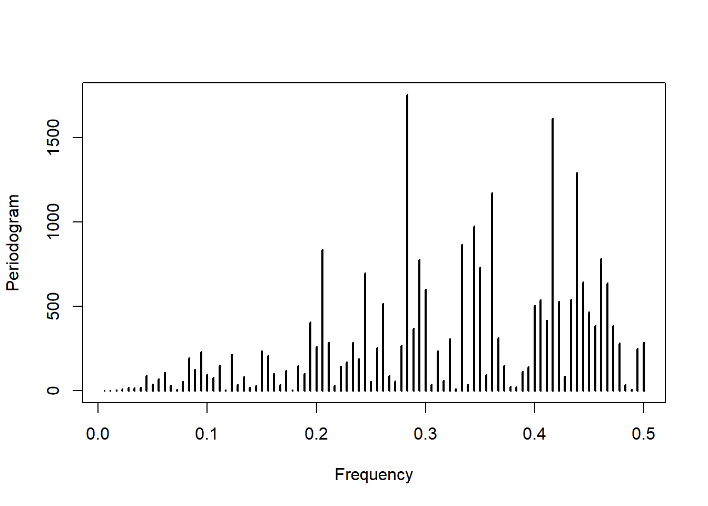
Vamos aplicar a primeira diferença e a diferença sazonal. O resultado, mostrado abaixo. A série resultante oscila em torno zero.
Dif_co2 <- diff( diff(co2,1), 12)
ts.plot(Dif_co2, ylab = 'Valores diferenciados')
abline(h=0, lty = 2)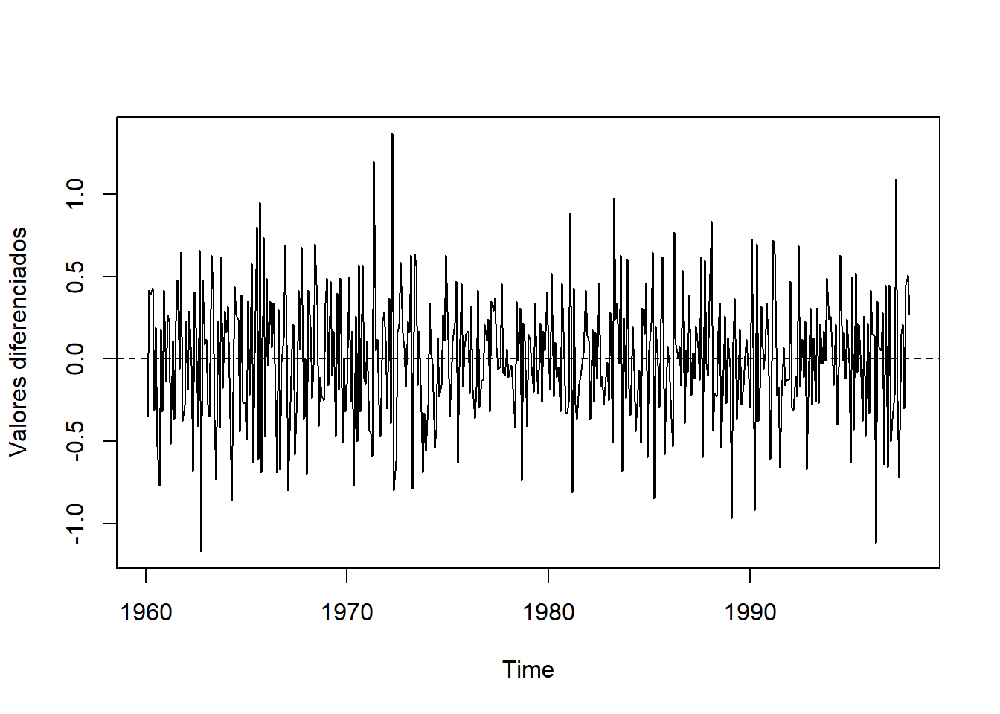
Em seguida, analisamos os correlogramas da série diferenciada. O resultado, mostrado a seguir, apresenta as seguintes características:
o correlograma sugere a presença de uma componente de médias móveis, de ordens 1 ou 2 e de uma sazonal de médias móveis de ordem 1.
o correlograma parcial sugere a presença de uma componente autorregressiva, de ordens 1 ou 3. O decaimento exponencial apenas nas defagens múltiplas de 12 sugere que o comportamento sazonal pode estar somente na parte de média móvel.
oo <- par(mfrow = c(1,2))
acf(Dif_co2, lag = 36)
pacf(Dif_co2, lag = 36)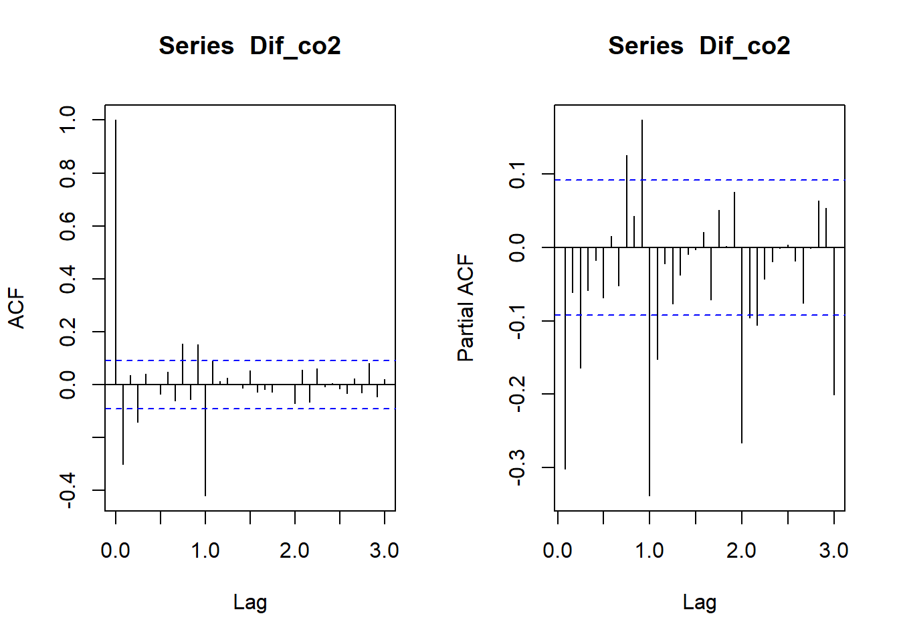
Portanto, vamos ajustar nosso modelo inicial, um SARIMA\((1,1,0)(1,1,1)_{12}\). Para tanto, utilizamos a função arima do R, onde o vetor \((p,d,q)\) é colocado no argumento order e o \((P,D,Q)\) no argumento seasonal. Abaixo, obtemos os resíduos deste modelo. Observe que devemos remover o primeiro ano dos resíduos, por causa da difenreça sazonal.
modelo_inicial <- arima( co2, order = c(1,1,0), seasonal = c(1,1,1))
res <- ts(residuals(modelo_inicial), start = start(co2),
frequency = frequency(co2))
residuos <- window(res, start =c(1960,1))
ts.plot(residuos, lwd = 2,
col = "blue", ylab = "Residuos", xlab = "Anos",
main = "Resíduos do modelo SARIMA(1,1,0)(1,1,1)")
abline(h = 0, lty = 2)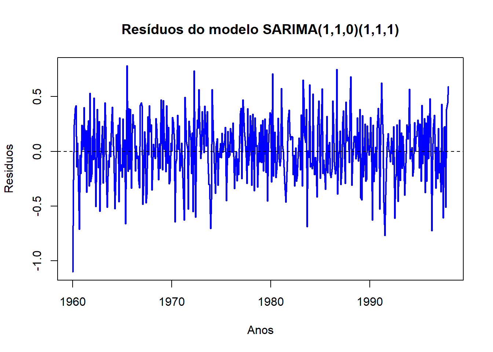
Após o ajuste do modelo, analisamos os correlogramas dos resíduos, conforme ilustrado abaixo. Observe que alguns elementos parecem ser significativos em ambos os gráficos. Contudo, os teste de Box-Pierce (p-valor=0,72) e Shapiro-Wilk (p-valor = 0,31) dão evidências de um ruído branco gaussiano.
oo <- par( mfrow = c(1,2))
acf(residuos, main='', lag = 36)
pacf(residuos, main ='', lag = 36)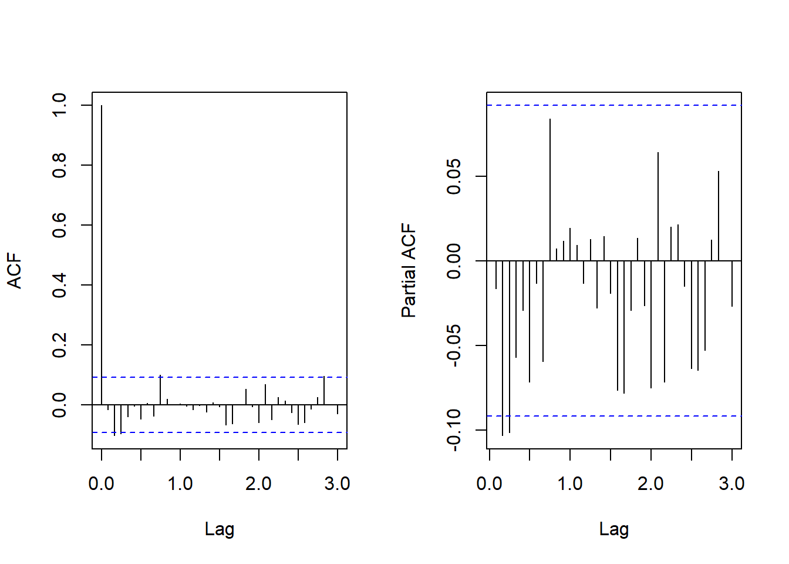
par(oo)
Box.test(residuos)
Box-Pierce test
data: residuos
X-squared = 0.12072, df = 1, p-value = 0.7283shapiro.test(residuos)
Shapiro-Wilk normality test
data: residuos
W = 0.99603, p-value = 0.3108Uma vez ajustado, o modelo pode ser utilizado para previsão. Abaixo, apresentamos a previsão até o ano de 2000 (três anos à frente).
previsao <- forecast::forecast( modelo_inicial, 36)
plot(previsao)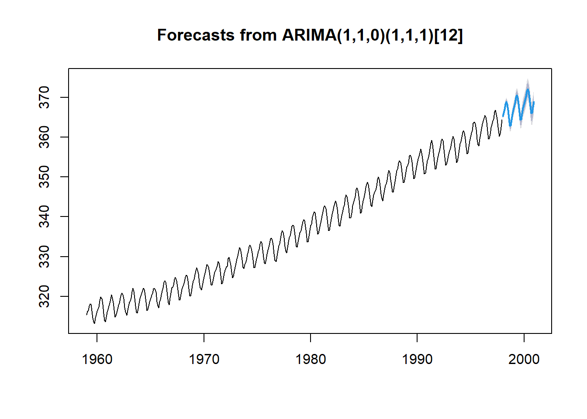
knitr::kable(previsao, digits = 2, caption = "Previsão da Taxa de Desocupação")| Point Forecast | Lo 80 | Hi 80 | Lo 95 | Hi 95 | |
|---|---|---|---|---|---|
| Jan 1998 | 365.27 | 364.90 | 365.64 | 364.70 | 365.84 |
| Feb 1998 | 366.15 | 365.70 | 366.61 | 365.46 | 366.85 |
| Mar 1998 | 367.00 | 366.46 | 367.54 | 366.17 | 367.83 |
| Apr 1998 | 368.36 | 367.75 | 368.97 | 367.43 | 369.30 |
| May 1998 | 368.93 | 368.25 | 369.60 | 367.90 | 369.96 |
| Jun 1998 | 368.23 | 367.50 | 368.97 | 367.11 | 369.36 |
| Jul 1998 | 366.74 | 365.95 | 367.53 | 365.54 | 367.95 |
| Aug 1998 | 364.70 | 363.86 | 365.54 | 363.42 | 365.98 |
| Sep 1998 | 362.83 | 361.95 | 363.72 | 361.48 | 364.19 |
| Oct 1998 | 362.96 | 362.03 | 363.89 | 361.54 | 364.39 |
| Nov 1998 | 364.40 | 363.42 | 365.37 | 362.91 | 365.89 |
| Dec 1998 | 365.81 | 364.80 | 366.83 | 364.26 | 367.37 |
| Jan 1999 | 366.87 | 365.80 | 367.95 | 365.23 | 368.51 |
| Feb 1999 | 367.72 | 366.60 | 368.84 | 366.00 | 369.44 |
| Mar 1999 | 368.59 | 367.41 | 369.76 | 366.79 | 370.38 |
| Apr 1999 | 369.93 | 368.71 | 371.15 | 368.07 | 371.80 |
| May 1999 | 370.50 | 369.24 | 371.77 | 368.57 | 372.44 |
| Jun 1999 | 369.83 | 368.52 | 371.13 | 367.83 | 371.83 |
| Jul 1999 | 368.32 | 366.97 | 369.67 | 366.26 | 370.39 |
| Aug 1999 | 366.28 | 364.89 | 367.67 | 364.15 | 368.40 |
| Sep 1999 | 364.43 | 363.00 | 365.86 | 362.24 | 366.61 |
| Oct 1999 | 364.54 | 363.07 | 366.01 | 362.29 | 366.79 |
| Nov 1999 | 365.97 | 364.46 | 367.47 | 363.66 | 368.27 |
| Dec 1999 | 367.37 | 365.82 | 368.91 | 365.01 | 369.73 |
| Jan 2000 | 368.43 | 366.84 | 370.02 | 366.00 | 370.86 |
| Feb 2000 | 369.28 | 367.65 | 370.91 | 366.78 | 371.78 |
| Mar 2000 | 370.15 | 368.47 | 371.82 | 367.58 | 372.71 |
| Apr 2000 | 371.49 | 369.78 | 373.21 | 368.87 | 374.12 |
| May 2000 | 372.06 | 370.31 | 373.82 | 369.38 | 374.75 |
| Jun 2000 | 371.38 | 369.59 | 373.18 | 368.64 | 374.13 |
| Jul 2000 | 369.88 | 368.05 | 371.72 | 367.07 | 372.69 |
| Aug 2000 | 367.84 | 365.96 | 369.71 | 364.97 | 370.70 |
| Sep 2000 | 365.99 | 364.08 | 367.89 | 363.06 | 368.91 |
| Oct 2000 | 366.10 | 364.15 | 368.05 | 363.12 | 369.08 |
| Nov 2000 | 367.52 | 365.54 | 369.51 | 364.49 | 370.56 |
| Dec 2000 | 368.92 | 366.91 | 370.94 | 365.84 | 372.01 |
11.7.2 Taxa de desocupação no Brasil
A série temporal da taxa de desocupação no Brasil é gerada a partir da Pesquisa Nacional por Amostra de Domicílios Contínua (PNAD Contínua), produzida pelo Instituto Brasileiro de Geografia e Estatística (IBGE). Diferente de indicadores mensais puros, esta série é estruturada e divulgada na forma de trimestres móveis. Isso significa que cada ponto observado na série representa o comportamento agregado de uma janela móvel de três meses (por exemplo, jan-fev-mar, seguido por fev-mar-abr), em que o mês mais antigo é descartado para a inclusão do mês subsequente. Essa metodologia visa garantir a robustez estatística e a estabilidade da amostragem do IBGE.
A série abaixo foi obtida no mês de outubro de 2026. Entratanto, devido ao comportamento atípico da pandemia, vamos analisá-la até o trimestre outubro-novembro-dezembro de 2026 (a análise completa será realizada no capítulo sobre Intervenção).
url <- "https://docs.google.com/spreadsheets/d/1wgX1tDVy7FL6Ymp1ldwC9J8xssDiT_IJ3UAAW1O5_Qs/edit?usp=sharing"
down <- gsheet::gsheet2tbl(url)
desemprego0 <- ts( down, start = c(2012,1), frequency = 12)
desemprego <- window(desemprego0, start=c(2012,1), end =c(2019,10))
ts.plot(desemprego, lwd = 2,
col = "blue", ylab = "Taxa de desocupação (%)", xlab = "Anos",
main = "Evolução da Taxa de Desocupação")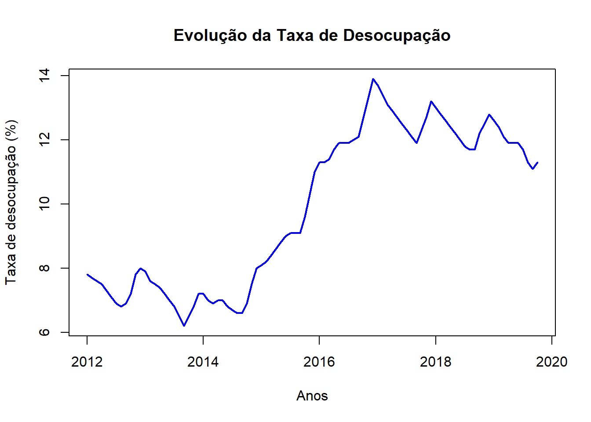
A série apresenta tendência, oscilando entre crescente e decrescente. Vamos aplicar a primeira diferença para a remoção da tendência. O resultado, conforme apresentado abaixo, mostra uma série oscilando em torno de zero. Em contrapartida, o correlograma sugere uma componente sazonal de período 12.
DeltaDesemprego <- diff(desemprego)
ts.plot(DeltaDesemprego, lwd = 2,
col = "blue", ylab = "Taxa de desocupação diferenciada", xlab = "Anos",
main = "Série diferenciada")
abline(h = 0, lty = 2)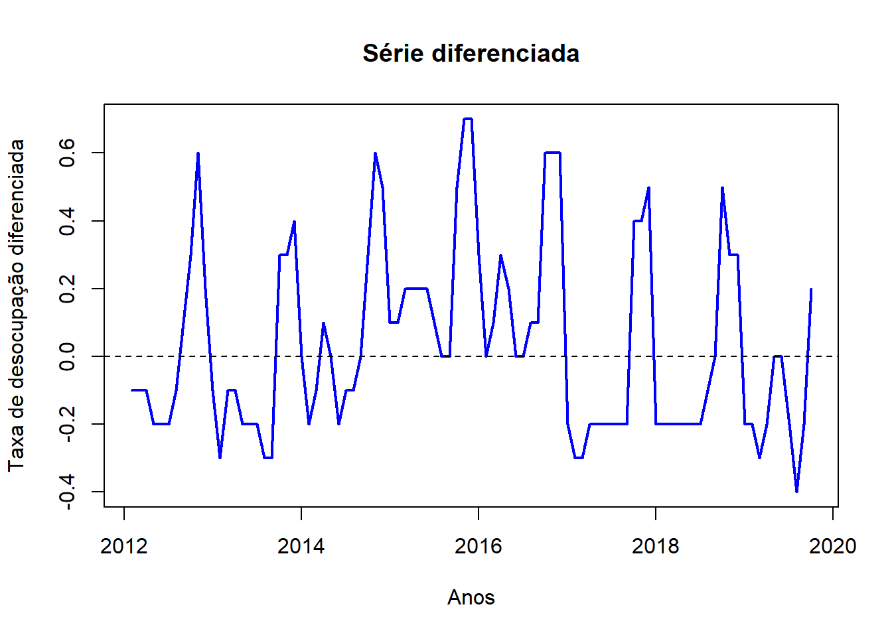
acf(DeltaDesemprego,lag = 36)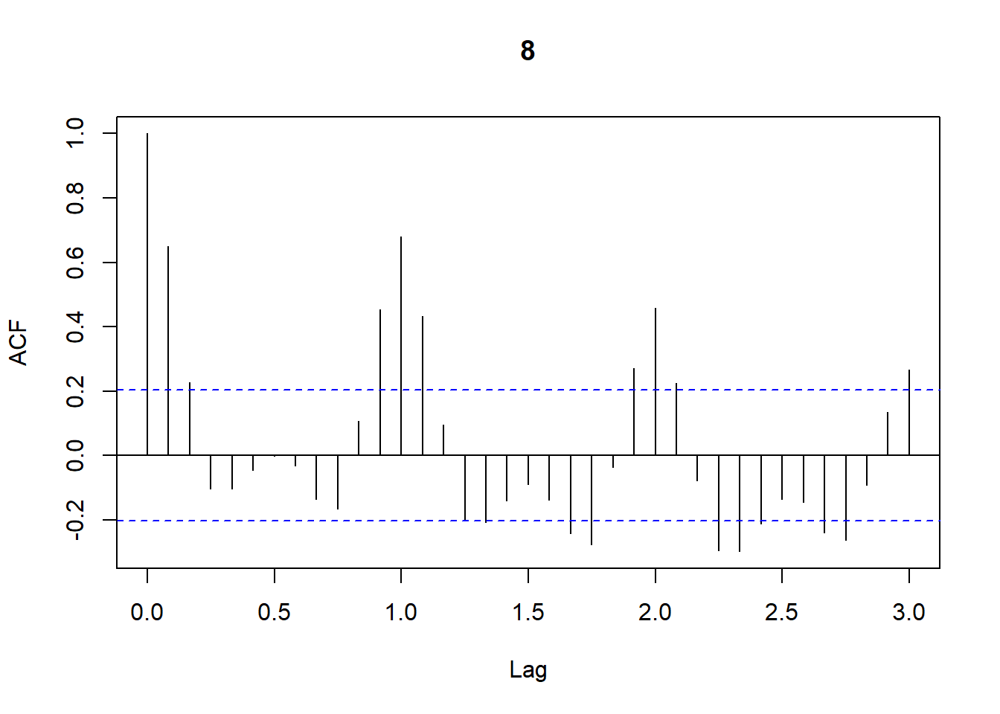
Para eliminar o sinal da sazonalidade, vamos aplicar a diferença sazonal de período 12 na série diferenciada.
D12_DeltaDesemprego <- diff(DeltaDesemprego, 12)
ts.plot(D12_DeltaDesemprego, lwd = 2,
col = "blue", ylab = "Taxa de diferenciada ", xlab = "Anos",
main = "Série diferenciada \n para tendência e sazonalidade")
abline(h = 0, lty = 2)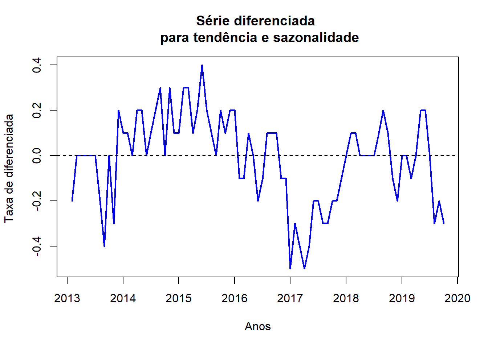
Abaixo, apresentamos os correlogramas da série livre dos sinais de tendência e sazonalidade. O correlograma parcial sugere um modelo autorregressivo de ordem 1, seguido de um autoregressivo sazonal também de ordem 1.
oo <- par( mfrow = c(1,2))
acf(D12_DeltaDesemprego, main='', lag = 36)
pacf(D12_DeltaDesemprego, main ='', lag = 36)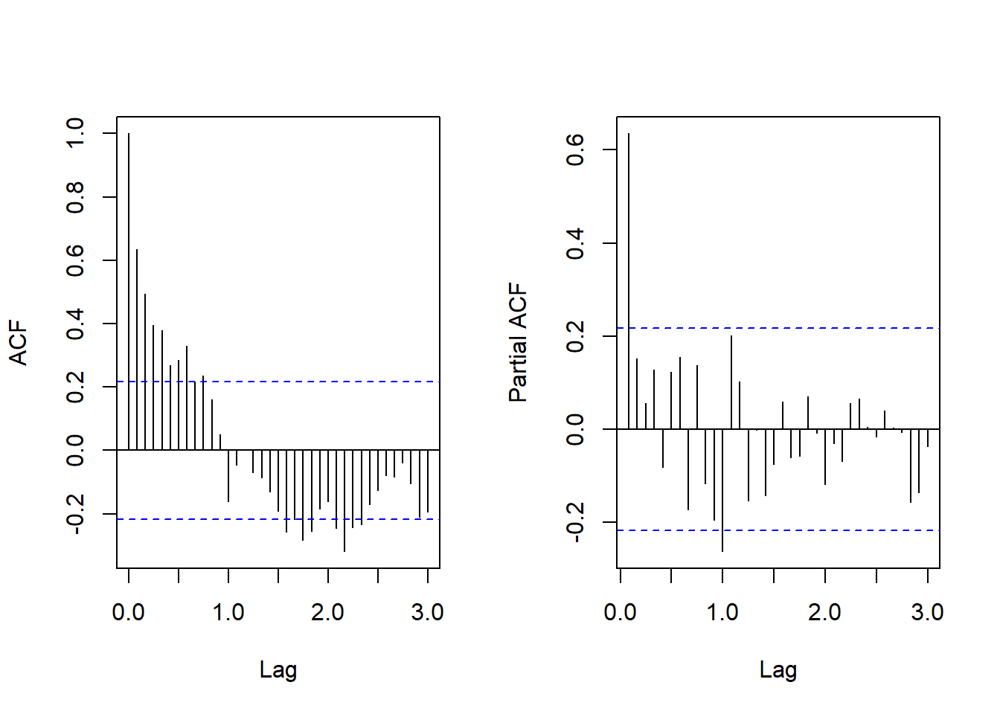
par(oo)Portanto, nosso primeiro modelo a ser testado é ao SARIMA\((1,1,0)(1,1,0)_{12}\). Abaixo, obtemos os resíduos deste modelo, com o corte do primeiro ano devido à diferença sazonal.
modelo_inicial <- arima( desemprego, order = c(1,1,0), seasonal = c(1,1,0))
res <- ts(residuals(modelo_inicial), start = start(desemprego),
frequency = frequency(desemprego))
residuos <- window(res, start =c(2013,1))
ts.plot(residuos, lwd = 2,
col = "blue", ylab = "Residuos", xlab = "Anos",
main = "Resíduos do modelo SARIMA(1,1,0)(1,1,0)")
abline(h = 0, lty = 2)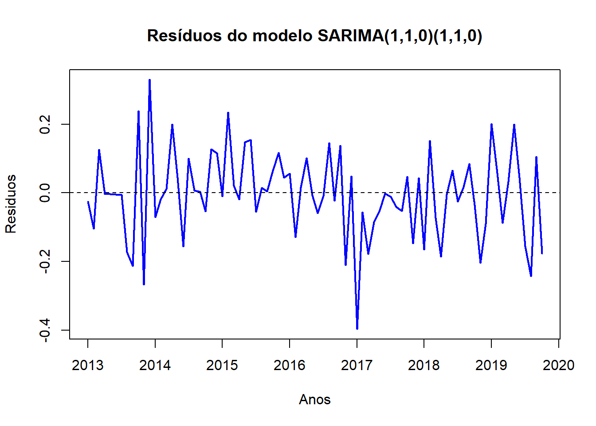
Após o ajuste do modelo, analisamos os correlogramas dos resíduos, conforme ilustrado abaixo. Observe a ausência de elementos significativos em ambos os gráficos. Os teste de Box-Pierce (p-valor=0,11) e Shapiro-Wilk (p-valor = 0,55) dão evidências de um ruído branco gaussiano.
oo <- par( mfrow = c(1,2))
acf(residuos, main='', lag = 36)
pacf(residuos, main ='', lag = 36)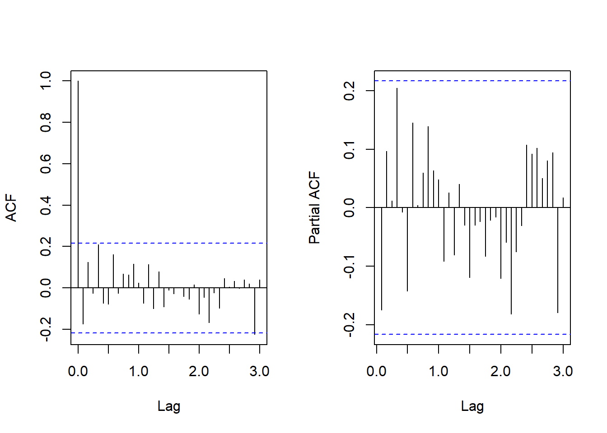
par(oo)
Box.test(residuos)
Box-Pierce test
data: residuos
X-squared = 2.5111, df = 1, p-value = 0.1131shapiro.test(residuos)
Shapiro-Wilk normality test
data: residuos
W = 0.98662, p-value = 0.5565Os coeficientes estimados, dados abaixo, foram: \(\phi=0,78\) (influência do trimestre móvel anterior) e \(\Phi=-0,57\) (influência do mesmo trimestre móvel no ano anterior).
modelo_inicial
Call:
arima(x = desemprego, order = c(1, 1, 0), seasonal = c(1, 1, 0))
Coefficients:
ar1 sar1
0.7812 -0.5763
s.e. 0.0724 0.1042
sigma^2 estimated as 0.0161: log likelihood = 49.42, aic = -92.84Uma vez ajustado, o modelo pode ser utilizado para previsão. Abaixo, apresentamos a previsão para o ano de 2020.
previsao <- forecast::forecast( modelo_inicial, 12)
plot(previsao)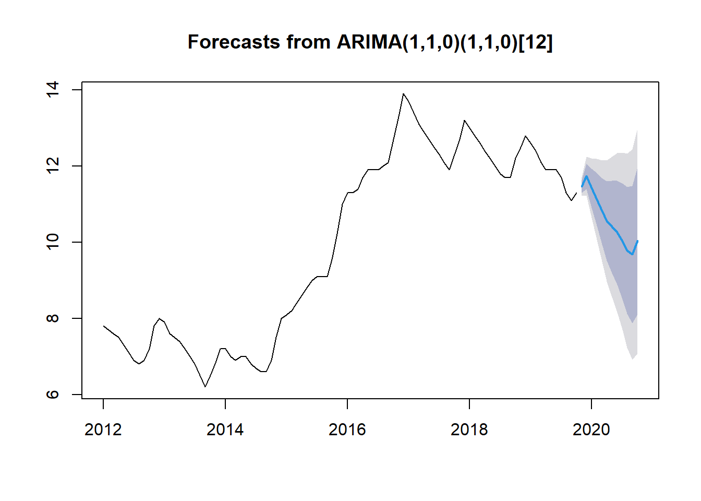
knitr::kable(previsao, digits = 2, caption = "Previsão da Taxa de Desocupação")| Point Forecast | Lo 80 | Hi 80 | Lo 95 | Hi 95 | |
|---|---|---|---|---|---|
| Nov 2019 | 11.47 | 11.31 | 11.63 | 11.22 | 11.72 |
| Dec 2019 | 11.74 | 11.40 | 12.07 | 11.23 | 12.24 |
| Jan 2020 | 11.42 | 10.91 | 11.93 | 10.64 | 12.20 |
| Feb 2020 | 11.13 | 10.44 | 11.82 | 10.07 | 12.19 |
| Mar 2020 | 10.82 | 9.95 | 11.69 | 9.49 | 12.15 |
| Apr 2020 | 10.56 | 9.52 | 11.60 | 8.97 | 12.16 |
| May 2020 | 10.40 | 9.20 | 11.61 | 8.56 | 12.25 |
| Jun 2020 | 10.25 | 8.89 | 11.62 | 8.16 | 12.35 |
| Jul 2020 | 10.03 | 8.51 | 11.55 | 7.70 | 12.35 |
| Aug 2020 | 9.78 | 8.12 | 11.45 | 7.23 | 12.33 |
| Sep 2020 | 9.68 | 7.88 | 11.48 | 6.92 | 12.44 |
| Oct 2020 | 10.04 | 8.10 | 11.98 | 7.08 | 13.00 |
11.8 Exercícios
11.8.1 Índice Niño 3.4
A série temporal do Índice Niño 3.4 mensura as anomalias mensais da Temperatura da Superfície do Mar (TSM) em uma região estratégica do Oceano Pacífico Equatorial (entre as latitudes 5°N–5°S e longitudes 170°W–120°W). Disponibilizado pela National Oceanic and Atmospheric Administration (NOAA), o indicador expressa o desvio da temperatura da água em relação à média histórica de longo prazo. Valores persistentemente positivos (acima de +0,5 °C) indicam a ocorrência do fenômeno El Niño (aquecimento), enquanto valores negativos (abaixo de -0,5 °C) caracterizam o fenômeno La Niña (resfriamento).
A série mensal, começando em janeiro 1984 pode ser obtida abaixo:
url <- 'https://docs.google.com/spreadsheets/d/1OEBz6iIYfEaUbuxe23M2Y1Tq3MdqC1iGdNdyb263_cI/edit?usp=sharing'
nino <- gsheet::gsheet2tbl(url)
nino <- ts( nino, start = c(1964,1), frequency = 12)Encontre um modelo adequado para ess série e faça previsões para 2027.
11.8.2 Manchas solares
A série temporal sunspot.year, disponível nativamente no R, contém o registro numérico anual do número médio de manchas solares observadas na superfície do Sol, abrangendo um longo período histórico que vai de 1700 a 1988. Encontre um modelo adequado para essa série.